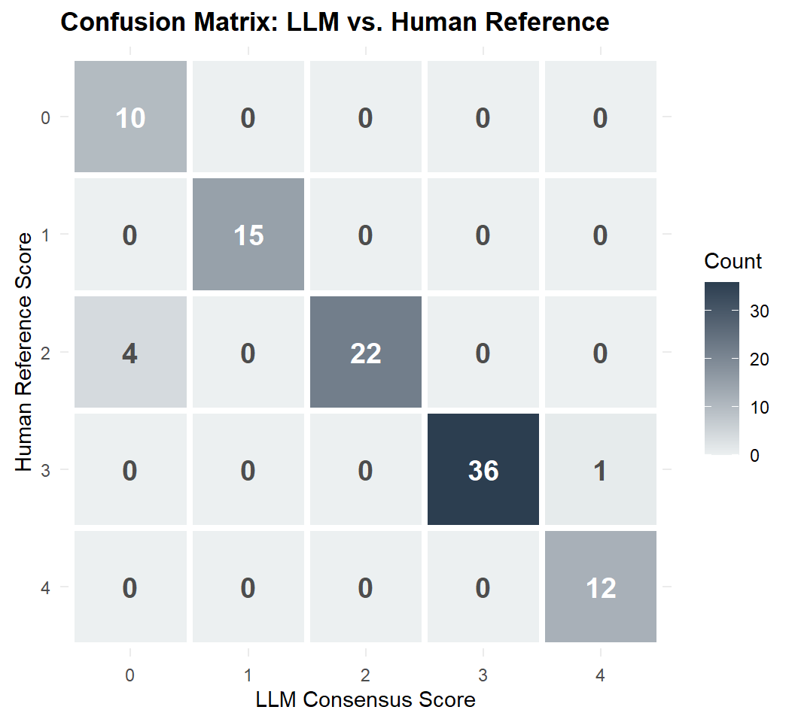
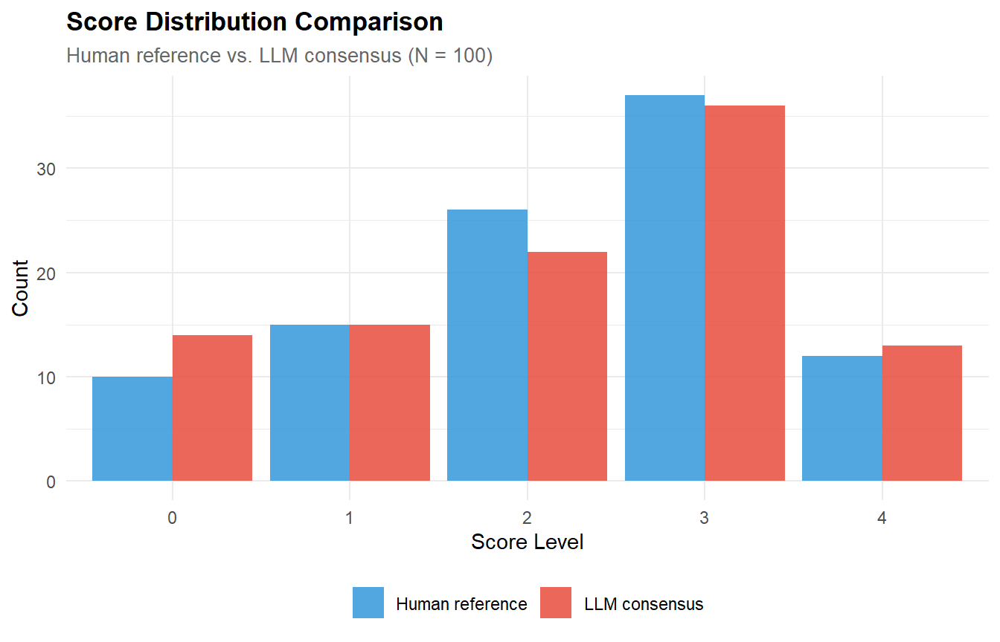
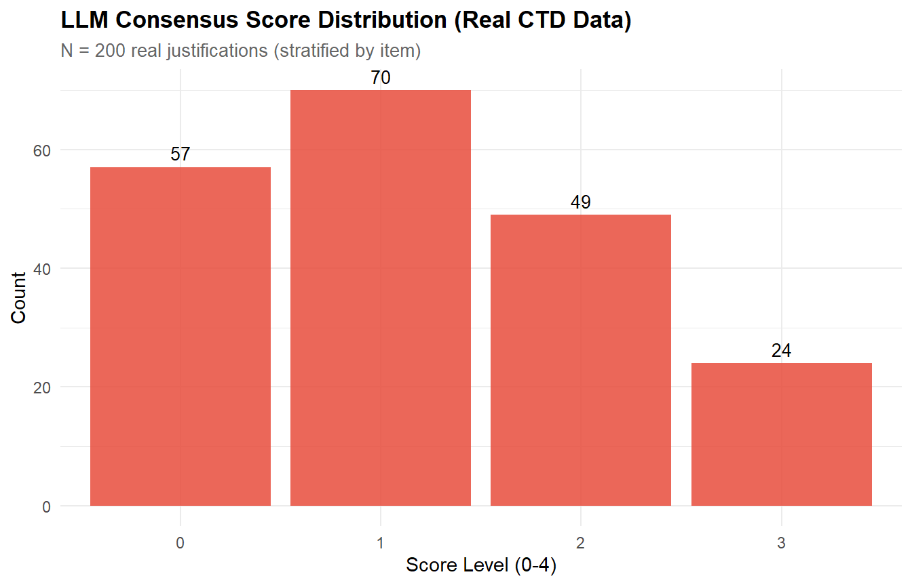
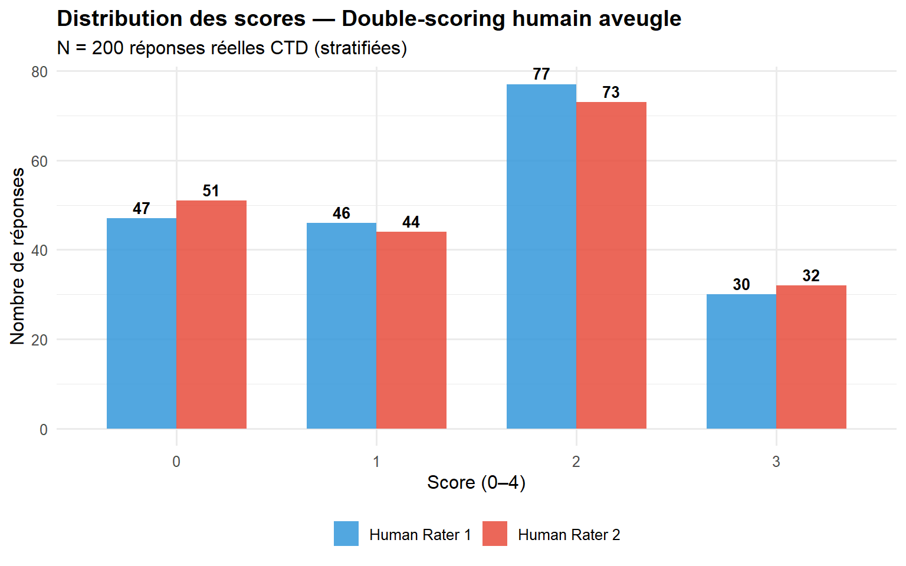
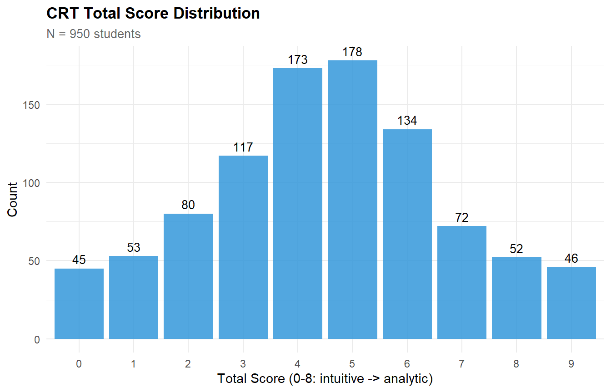
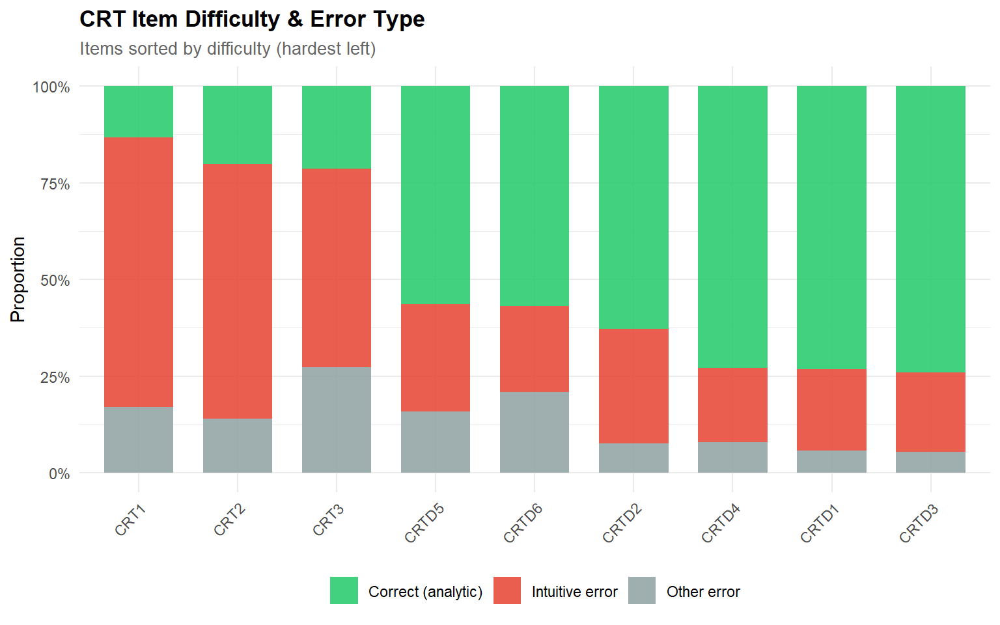

# ── Core packages ──────────────────────────────────────────────────────────────
library(httr2) # API calls
library(jsonlite) # JSON parsing
library(irr) # ICC, kappa
library(ggplot2)
library(dplyr)
library(tidyr)
library(tibble)
library(purrr)
library(knitr)
library(readr)
library(stringr) # for str_extract in real-data chunks
library(digest) # for prompt hashing
# ── Global plot theme ──────────────────────────────────────────────────────────
theme_set(
theme_minimal(base_size = 11) +
theme(
plot.title = element_text(face = "bold", size = 13),
plot.subtitle = element_text(colour = "grey40", size = 10),
legend.position = "bottom"
)
)
palette_llm <- c("#2C3E50", "#E74C3C", "#3498DB", "#2ECC71", "#F39C12")
set.seed(2026)
## ── API configuration ────────────────────────────────────────────────────────
API_KEY <- Sys.getenv("GEMINI_API_KEY") # You need to set an API_KEY (e.g. "Sys.setenv(GEMINI_API_KEY = "XXXX"))
API_MODEL <- "gemini-3.1-flash-lite-preview"
has_api_key <- nzchar(API_KEY)
CACHE_ROOT <- "cache_llm_scoring"
CACHE_SUCCESS <- file.path(CACHE_ROOT, "success")
CACHE_ERROR <- file.path(CACHE_ROOT, "error")
dir.create(CACHE_ROOT, recursive = TRUE, showWarnings = FALSE)
dir.create(CACHE_SUCCESS, recursive = TRUE, showWarnings = FALSE)
dir.create(CACHE_ERROR, recursive = TRUE, showWarnings = FALSE)
## ── Cache helpers ─────────────────────────────────────────────────────────────
make_prompt_hash <- function(prompt_text) {
digest(prompt_text, algo = "xxhash64")
}
make_cache_stem <- function(response_id, pass_num, model, prompt_hash) {
safe_model <- gsub("[^A-Za-z0-9_-]", "_", model)
sprintf("%s_pass%d_%s_%s", response_id, pass_num, safe_model, prompt_hash)
}
get_success_cache_file <- function(response_id, pass_num, model, prompt_hash,
cache_dir = CACHE_SUCCESS) {
file.path(cache_dir, paste0(
make_cache_stem(response_id, pass_num, model, prompt_hash), ".rds"
))
}
get_error_cache_file <- function(response_id, pass_num, model, prompt_hash,
cache_dir = CACHE_ERROR) {
file.path(cache_dir, paste0(
make_cache_stem(response_id, pass_num, model, prompt_hash), ".rds"
))
}LLM-Assisted Scoring of psychological tests (Open-Ended & closed-Ended Responses)
R
Psychometrics
LLM
Automated Scoring
Reliability
AI Assessment
Reproducible pipeline for structured prompting-based scoring of open-ended critical thinking disposition test (CTD) responses using a large language model API. Demonstrates rubric-anchored scoring, multi-pass consensus, inter-rater reliability (Cohen’s κ, ICC, exact agreement), score distribution analysis, and scalability evaluation. Includes benchmark on simulated data, validation on a stratified sample of ~200 real student responses (serving as both reality check and human double-scoring material), and closed-ended CRT scoring. Full-corpus deployment code is provided in the Appendix.
1 Context
Scoring open-ended responses at scale is a persistent bottleneck in educational assessment. Human raters are expensive, slow, and subject to drift and fatigue. Large Language Models (LLMs) offer a powerful alternative: structured prompting pipelines that embed scoring rubrics directly into the system prompt, enabling zero-shot scoring without task-specific fine-tuning (Yancey et al., 2023; Latif & Zhai, 2024).
This project implements a complete, model-agnostic LLM scoring workflow for the Critical Thinking Disposition (CTD) test. The pipeline includes rubric-anchored prompting, multi-pass consensus, inter-rater reliability estimation, and scalability analysis. It was first validated on 100 simulated responses with known ground-truth scores, then tested on a stratified sample of ~200 real student justifications. That same sample serves as material for independent human double-scoring, providing the definitive operational benchmark.
This test is based on the work of Hémon and his colleagues (Hémon et al., 2025), which adapts the work of Bråten and his colleagues on epistemological beliefs (Bråten et al., 2019) to the French context.
2 Key Results
Theoretical expectations & what to look for
Before examining the output, we expect: - High intra-LLM consistency (ICC ≥ 0.85, exact agreement ≥ 70 %) because the structured rubric constrains the output space. - LLM–Human agreement approaching or exceeding typical human–human levels (κ ≈ 0.60–0.80). - Faithful reproduction of the score distribution (no central tendency bias or floor/ceiling effects). - Excellent scalability (low cost and runtime for thousands of responses).
Results obtained
Benchmark on simulated data (N=100, 3 passes)
- Intra-LLM exact agreement = 95.0 % | Adjacent agreement = 100.0 %
- ICC (single measure) = 0.990 | ICC (average measure) = 0.997
- LLM–Human Cohen’s κ = 0.934 (unweighted) / 0.941 (quadratic)
- Exact agreement = 95.0 % | Adjacent agreement = 96.0 %
Validation on real CTD data (N = 200 stratified sample, 3 passes)
- Human–Human Cohen’s κ = 0.945 | Weighted κ = 0.973 | Exact agreement = 96.0 %
- LLM–Human Cohen’s κ = 0.628 | Weighted κ = 0.771 | Exact agreement = 72.5 %
- ICC (3 raters, single measure) = 0.831 [0.770, 0.875]
- The LLM systematically under-scores (48 under vs. 9 over), primarily at the 2→1 and 2→0 boundaries. This reflects a rubric discrimination issue rather than a model limitation, and is actionable through prompt refinement (see PART C).
Scalability
Mean latency = 2.43 s per call. The full operational corpus of ~4,640 responses can be scored single-pass in ~4 h sequential at an estimated cost of $0.45 (paid tier), or 3-pass for $1.36. On free tier (300 calls/day), the stratified validation sample (~600 calls) completes in 2 days.
These results place the pipeline in the upper range of current LLM scoring systems and demonstrate immediate operational readiness.
3 Setup
# Run this chunk manually to clear error cache and retry failed calls.
error_files <- list.files(CACHE_ERROR, full.names = TRUE, pattern = "\\.rds$")
if (length(error_files) > 0) {
cat(sprintf("Purging %d error cache files...\n", length(error_files)))
file.remove(error_files)
cat("Error cache cleared. Missing passes will be retried on next run.\n")
} else {
cat("No error files to purge.\n")
}
if (exists("scoring_results")) rm(scoring_results)4 PART A — Core Engine (Function Definitions)
This section defines all reusable functions. No data is loaded and no scoring is executed here. The functions are called in subsequent parts with different datasets: simulated (PART B) and real stratified sample (PART C).
4.1 Scoring prompt design
system_prompt <- '
You are an expert educational assessor specialising in critical thinking
assessment. Your task is to score student responses to a Critical Thinking Disposition
Test (CTD) using the rubric below.
## SCORING RUBRIC
Score 0 — No reflection:
No engagement with source credibility. Response is off-topic, blank,
or non-evaluative.
Example: "The video was interesting." / "I don\'t know."
Score 1 — Attitudinal:
No engagement with source credibility. Evaluation is based primarily
on agreement or disagreement with the source\'s position.
Example: "I trust this video because it says what I already believe."
Score 2 — Surface:
Mentions credibility or trust but provides no substantive reasoning.
Statements are vague, circular, or rely on surface cues
(appearance, popularity, speaker confidence).
Example: "I think this source is credible because it seems professional."
Score 3 — Developing:
Identifies 1-2 relevant evaluation criteria (authority, evidence quality,
bias, reasoning, transparency) with some supporting reasoning.
May note a strength or weakness but does not integrate multiple dimensions.
Example: "The speaker has expertise based on their credentials, but they
didn\'t cite specific studies to support their main claim."
Score 4 — Critical:
Systematic evaluation integrating multiple criteria with explicit
reasoning. Acknowledges complexity, nuance, or tension between
strengths and weaknesses. May reference specific elements of the
source and articulate limitations of the evaluation itself.
Example: "Evaluating this source requires considering authority (expert
with publications), evidence quality (peer-reviewed but partly self-cited),
and reasoning (mostly sound but overgeneralised)."
## OUTPUT FORMAT
Respond with ONLY a JSON object — no additional text:
{"score": <integer 0-4>, "justification": "<brief 1-2 sentence rationale>"}
'
cat("System prompt length:", nchar(system_prompt), "characters\n")System prompt length: 1860 characters4.2 API scoring function
score_response_llm <- function(response_text, response_id, pass_num,
api_key = API_KEY,
model = API_MODEL,
scoring_prompt = system_prompt,
cache_success_dir = CACHE_SUCCESS,
cache_error_dir = CACHE_ERROR,
log_errors = TRUE,
temperature = 0.3,
max_output_tokens = 200) {
prompt_hash <- make_prompt_hash(scoring_prompt)
success_file <- get_success_cache_file(
response_id = response_id,
pass_num = pass_num,
model = model,
prompt_hash = prompt_hash,
cache_dir = cache_success_dir
)
error_file <- get_error_cache_file(
response_id = response_id,
pass_num = pass_num,
model = model,
prompt_hash = prompt_hash,
cache_dir = cache_error_dir
)
# Reuse only successful cached results
if (file.exists(success_file)) {
return(readRDS(success_file))
}
user_msg <- sprintf(
"Score the following student response to a Critical Thinking Disposition Test.\n\nSTUDENT RESPONSE:\n\"%s\"",
response_text
)
start_time <- Sys.time()
result <- tryCatch({
resp <- request(sprintf(
"https://generativelanguage.googleapis.com/v1beta/models/%s:generateContent?key=%s",
model, api_key
)) |>
req_headers(`Content-Type` = "application/json") |>
req_body_json(list(
systemInstruction = list(
parts = list(list(text = scoring_prompt))
),
contents = list(list(
role = "user",
parts = list(list(text = user_msg))
)),
generationConfig = list(
temperature = temperature,
maxOutputTokens = max_output_tokens
)
)) |>
req_timeout(45) |>
req_perform()
body <- resp_body_json(resp)
raw_text <- tryCatch(
body$candidates[[1]]$content$parts[[1]]$text,
error = function(e) NA_character_
)
if (is.na(raw_text) || !nzchar(raw_text)) {
stop("Empty or missing model response.")
}
parsed <- tryCatch(
jsonlite::fromJSON(raw_text),
error = function(e) NULL
)
if (!is.null(parsed) &&
!is.null(parsed$score) &&
!is.na(parsed$score) &&
parsed$score %in% 0:4) {
score_value <- as.integer(parsed$score)
justification_value <- if (!is.null(parsed$justification)) {
as.character(parsed$justification)
} else {
"Valid JSON parsed; no justification provided."
}
} else {
score_match <- regmatches(
raw_text,
regexpr('"score"\\s*:\\s*([0-4])', raw_text, perl = TRUE)
)
if (length(score_match) > 0 && !is.na(score_match)) {
score_value <- as.integer(gsub('.*([0-4]).*', '\\1', score_match))
justification_value <- "Parsed from malformed JSON."
} else {
stop(sprintf("Could not parse valid score from model output: %s", raw_text))
}
}
elapsed <- as.numeric(difftime(Sys.time(), start_time, units = "secs"))
out <- tibble(
id = response_id,
pass = pass_num,
score = score_value,
justification = justification_value,
latency_sec = round(elapsed, 2),
status = "success",
model = model,
prompt_hash = prompt_hash,
cache_type = "success"
)
saveRDS(out, success_file)
out
}, error = function(e) {
elapsed <- as.numeric(difftime(Sys.time(), start_time, units = "secs"))
err <- tibble(
id = response_id,
pass = pass_num,
score = NA_integer_,
justification = conditionMessage(e),
latency_sec = round(elapsed, 2),
status = "error",
model = model,
prompt_hash = prompt_hash,
cache_type = "error"
)
if (isTRUE(log_errors)) {
saveRDS(err, error_file)
}
err
})
result
}4.3 Pipeline wrapper functions
These three functions encapsulate the scoring loop, consensus computation, and reliability analysis. They are called identically in PART B (simulated data) and PART C (real stratified sample).
# ── 1. Run the scoring loop ───────────────────────────────────────────────────
# Returns a tibble of scoring results (one row per id × pass).
run_scoring_pipeline <- function(responses_df, n_passes = 3,
rate_limit_sec = 4,
progress_every = 25) {
n_responses <- nrow(responses_df)
prompt_hash <- make_prompt_hash(system_prompt)
# Check whether all results are already cached
expected_calls <- tidyr::expand_grid(
id = responses_df$id,
pass = seq_len(n_passes)
) |>
mutate(
cache_file = purrr::map2_chr(
id, pass,
~ get_success_cache_file(.x, .y, API_MODEL, prompt_hash)
)
)
all_success_cached <- all(file.exists(expected_calls$cache_file))
if (has_api_key) {
cat(sprintf(
"Running live LLM scoring (%d passes x %d responses)...\n",
n_passes, n_responses
))
scoring_results <- purrr::map_dfr(seq_len(n_responses), function(i) {
purrr::map_dfr(seq_len(n_passes), function(p) {
if (i %% progress_every == 0 && p == 1) {
cat(sprintf(" Progress: %d/%d responses\n", i, n_responses))
}
success_file <- get_success_cache_file(
responses_df$id[i], p, API_MODEL, prompt_hash
)
was_cached <- file.exists(success_file)
result <- score_response_llm(
response_text = responses_df$response[i],
response_id = responses_df$id[i],
pass_num = p
)
# Rate-limit only for fresh API calls
if (!was_cached) Sys.sleep(rate_limit_sec)
result
})
})
cat(sprintf("\nCompleted: %d scoring attempts\n", nrow(scoring_results)))
cat(sprintf(
"Success rate: %.1f%%\n",
100 * mean(scoring_results$status == "success", na.rm = TRUE)
))
error_summary <- scoring_results |>
filter(status == "error") |>
count(justification, sort = TRUE)
if (nrow(error_summary) > 0) {
cat("\nError summary:\n")
print(error_summary, n = nrow(error_summary))
}
} else if (all_success_cached) {
cat("No API key detected — loading successful cached results.\n")
scoring_results <- purrr::map_dfr(expected_calls$cache_file, readRDS)
cat(sprintf("Loaded %d cached scoring results.\n", nrow(scoring_results)))
} else {
# Simulation requires known true_level
if (all(is.na(responses_df$true_level))) {
stop(paste0(
"No API key detected and cache incomplete.\n",
"Simulation requires known true_level (available for simulated data only).\n",
"Set GEMINI_API_KEY to score real responses, or run PART B first for a demo."
))
}
cat("No API key and cache incomplete — generating simulated LLM scores.\n")
cat("(Set GEMINI_API_KEY environment variable for live scoring)\n\n")
scoring_results <- purrr::map_dfr(seq_len(n_responses), function(i) {
true_score <- responses_df$true_level[i]
purrr::map_dfr(seq_len(n_passes), function(p) {
noise <- sample(c(-1, 0, 0, 0, 0, 0, 1), 1)
sim_score <- max(0, min(4, true_score + noise))
tibble(
id = responses_df$id[i],
pass = p,
score = sim_score,
justification = sprintf("Simulated score for level %d response", true_score),
latency_sec = round(runif(1, 1.2, 3.5), 2),
status = "simulated",
model = API_MODEL,
prompt_hash = prompt_hash,
cache_type = "none"
)
})
})
cat(sprintf("Generated %d simulated scoring results.\n", nrow(scoring_results)))
}
scoring_results
}
# ── 2. Prepare consensus scores ──────────────────────────────────────────────
prepare_consensus <- function(scoring_results, responses_df, n_passes = 3) {
scoring_valid <- scoring_results |>
dplyr::filter(status %in% c("success", "simulated")) |>
dplyr::filter(!is.na(score), score %in% 0:4) |>
dplyr::transmute(
id = as.character(id),
pass = as.integer(pass),
score = as.integer(score)
)
# Duplicate check
dup_check <- scoring_valid |> dplyr::count(id, pass) |> dplyr::filter(n > 1)
if (nrow(dup_check) > 0) {
stop(sprintf("Duplicate scoring entries for %d id-pass combinations.", nrow(dup_check)))
}
# Completeness check
pass_check <- scoring_valid |> dplyr::count(id, name = "n_passes")
missing_ids <- responses_df |>
dplyr::select(id) |>
dplyr::left_join(pass_check, by = "id") |>
dplyr::mutate(n_passes = tidyr::replace_na(n_passes, 0L)) |>
dplyr::filter(n_passes != !!n_passes) |>
dplyr::pull(id)
if (length(missing_ids) > 0) {
warning(sprintf(
"Incomplete scoring for %d response(s). Proceeding with complete cases.",
length(missing_ids)
))
scoring_valid <- scoring_valid |>
dplyr::semi_join(pass_check |> dplyr::filter(n_passes == !!n_passes), by = "id")
}
# Reshape to wide
scores_wide <- scoring_valid |>
tidyr::pivot_wider(
names_from = pass,
values_from = score,
names_prefix = "pass_"
)
# Consensus: majority vote, else median
compute_consensus <- function(x) {
x <- as.integer(x)
tab <- table(x)
if (max(tab) >= 2) {
as.integer(names(tab)[which.max(tab)])
} else {
as.integer(stats::median(x))
}
}
pass_cols <- paste0("pass_", seq_len(n_passes))
scores_wide <- scores_wide |>
dplyr::rowwise() |>
dplyr::mutate(
consensus = compute_consensus(dplyr::c_across(dplyr::all_of(pass_cols)))
) |>
dplyr::ungroup() |>
dplyr::left_join(
responses_df |> dplyr::select(id, dplyr::any_of("true_level")),
by = "id"
)
scores_wide
}
# ── 3. Compute intra-LLM reliability report ──────────────────────────────────
compute_intra_llm_reliability <- function(scores_wide, label = "Data") {
ratings_matrix <- scores_wide |>
dplyr::select(dplyr::starts_with("pass_")) |>
as.matrix()
# Exact & adjacent agreement
exact_agree <- mean(apply(ratings_matrix, 1, function(x) length(unique(x)) == 1))
adjacent_agree <- mean(apply(ratings_matrix, 1, function(x) (max(x) - min(x)) <= 1))
cat(sprintf("=== Intra-LLM Reliability: %s (N = %d) ===\n\n", label, nrow(ratings_matrix)))
cat(sprintf("Exact agreement (all passes identical): %.1f%%\n", 100 * exact_agree))
cat(sprintf("Adjacent agreement (max range <= 1): %.1f%%\n", 100 * adjacent_agree))
# Pairwise Cohen's kappa
n_passes <- ncol(ratings_matrix)
kappa_pairs <- combn(n_passes, 2, simplify = FALSE)
kappa_table <- purrr::map_dfr(kappa_pairs, function(pair) {
k <- kappa2(ratings_matrix[, pair])
tibble(
Pair = sprintf("Pass %d vs %d", pair[1], pair[2]),
`Cohen's k` = round(k$value, 3),
p_value = formatC(k$p.value, format = "e", digits = 2)
)
})
cat("\n")
print(kable(kappa_table, caption = sprintf("Pairwise Cohen's kappa (%s)", label)))
# ICC
icc_single <- icc(ratings_matrix, model = "twoway", type = "agreement", unit = "single")
icc_avg <- icc(ratings_matrix, model = "twoway", type = "agreement", unit = "average")
cat(sprintf("\nICC (two-way, agreement, single): %.3f [%.3f, %.3f]\n",
icc_single$value, icc_single$lbound, icc_single$ubound))
cat(sprintf("ICC (two-way, agreement, average): %.3f [%.3f, %.3f]\n",
icc_avg$value, icc_avg$lbound, icc_avg$ubound))
invisible(list(
exact_agree = exact_agree,
adjacent_agree = adjacent_agree,
kappa_table = kappa_table,
icc_single = icc_single,
icc_avg = icc_avg
))
}5 PART B — Benchmark on Simulated Data
5.1 CTD response corpus (simulated)
# ── Rubric definition ────────────────────────────────────────────────────────
rubric_levels <- tribble(
~level, ~label, ~description,
0, "No reflection", "No engagement with source credibility; off-topic or blank.",
1, "Attitudinal", "No engagement with source credibility; evaluation is based primarily on agreement or disagreement with the source's position.",
2, "Surface", "Mentions credibility but no reasoning; vague or circular.",
3, "Developing", "Identifies 1-2 relevant criteria (e.g., authority, evidence, bias) with some reasoning.",
4, "Critical", "Systematic evaluation of multiple criteria with explicit reasoning and nuance."
)
kable(rubric_levels, caption = "CTD (critical thinking disposition) scoring rubric (5 levels)")| level | label | description |
|---|---|---|
| 0 | No reflection | No engagement with source credibility; off-topic or blank. |
| 1 | Attitudinal | No engagement with source credibility; evaluation is based primarily on agreement or disagreement with the source’s position. |
| 2 | Surface | Mentions credibility but no reasoning; vague or circular. |
| 3 | Developing | Identifies 1-2 relevant criteria (e.g., authority, evidence, bias) with some reasoning. |
| 4 | Critical | Systematic evaluation of multiple criteria with explicit reasoning and nuance. |
# ── Response templates by level ──────────────────────────────────────────────
templates <- list(
`0` = c(
"I don't know.",
"The video was interesting.",
"I liked the topic.",
"N/A",
""
),
`1` = c(
"I trust this video because it says what I already believe.",
"This source seems credible to me because I agree with its message.",
"I believe this video because its point of view matches mine.",
"I don't really trust this video because I disagree with what it says.",
"This source seems unreliable to me because it goes against my opinion.",
"I think this video is wrong because I don't believe in that point of view.",
"I would trust this source since it supports the position I already had.",
"This feels unreliable because it does not fit with what I think about the issue."
),
`2` = c(
"I think this source is credible because it seems professional.",
"The information looks correct to me.",
"I would trust this source because it has a lot of views.",
"It seems reliable because the speaker sounds confident.",
"The source is probably trustworthy.",
"This is a good source."
),
`3` = c(
"The speaker appears to have expertise in the field based on their credentials mentioned at the start. However, I noticed they didn't cite specific studies to support their main claim.",
"This source has some credibility because the author is affiliated with a university. The argument is mostly logical, but there are some unsupported generalizations in the middle section.",
"I would partially trust this source. The data presented seems accurate, but the sample size is small and may not be representative. The author acknowledges this limitation briefly.",
"The source presents evidence from multiple studies, which adds credibility. However, I noticed the funding source could create a conflict of interest that should be considered.",
"The information is mostly credible. The author uses peer-reviewed citations, but the conclusion goes beyond what the cited evidence actually supports."
),
`4` = c(
"This source demonstrates strong credibility in several ways: the author holds relevant expertise (PhD in the field, 15 years of research), cites peer-reviewed sources consistently, and acknowledges the limitations of the evidence presented. However, the funding from an industry stakeholder introduces a potential conflict of interest that the author does not fully address. The argument is logically structured, but the causal claim in paragraph 3 relies on correlational data, which weakens the conclusion. Overall, I would rate this as credible but with important caveats regarding the funding and the strength of causal inference.",
"Evaluating this source requires considering multiple dimensions. First, the author's authority: they are a recognized expert with relevant publications, which supports credibility. Second, the evidence quality: the source cites recent, peer-reviewed studies, but I noticed two of the five citations are from the author's own lab, which could introduce confirmation bias. Third, the reasoning: the logical chain from evidence to conclusion is mostly sound, but the generalization from a Western sample to universal claims is problematic. Finally, the presentation acknowledges uncertainty appropriately in most places, except the headline which overstates the findings. Balancing these factors, the source is credible but requires critical reading.",
"I assess this source as moderately credible with significant strengths and some weaknesses. Strengths include the author's institutional affiliation, systematic methodology described in detail, and transparent reporting of effect sizes. Weaknesses include: (1) the absence of pre-registration, raising concerns about potential p-hacking; (2) the sample being drawn from a single university, limiting external validity; (3) the discussion section making policy recommendations that go beyond the data. The source also fails to discuss alternative explanations for the observed patterns. A critical reader should weigh the methodological rigor against these inferential overreaches.",
"The credibility of this source can be evaluated on four criteria. Authority: the author is a professor at a reputable institution with a strong publication record in this specific area — this is a strength. Evidence: the claims are supported by a meta-analysis of 42 studies, which provides robust evidence. However, the heterogeneity (I2 = 78%) suggests the effect varies substantially across contexts, which the author downplays. Reasoning: the argument structure is clear, but there is a leap from 'associated with' to 'causes' in the final section that is not warranted by correlational evidence. Transparency: the author discloses funding and competing interests, which is good practice. Overall, this is a high-quality source that nonetheless requires careful reading of the nuances the author sometimes glosses over.",
"My evaluation of this source's credibility considers multiple dimensions simultaneously. The author's expertise is well-established through their academic position and publication history, lending initial credibility. The evidence presented includes both quantitative data (from a controlled experiment, N=340) and qualitative examples, which strengthens the argument through triangulation. However, several concerns temper my assessment: the experimental manipulation may lack ecological validity, the qualitative examples appear selectively chosen to support the thesis, and the comparison group is passive (no-treatment) rather than active, making it impossible to rule out placebo effects. The writing style is measured and academic, with appropriate hedging in most claims. The peer-review status adds credibility, though I note this is from a journal with a moderate impact factor. Taken together, the source offers useful evidence within its acknowledged limitations, but should not be treated as definitive."
)
)
# ── Small text augmentation helpers ──────────────────────────────────────────
hedges <- c("I think", "In my opinion", "Honestly",
"To me", "It seems to me", "From my perspective")
closers <- c("", " overall.", " in general.",
" at least to me.", " from what I can tell.", " based on what I saw.")
connectors <- c("", "Honestly, ", "Basically, ", "I mean, ", "Well, ")
light_typos <- function(x) {
x <- gsub("do not", "don't", x, fixed = TRUE)
x <- gsub("cannot", "can't", x, fixed = TRUE)
x <- gsub("is not", "isn't", x, fixed = TRUE)
x
}
random_case <- function(x, p = 0.08) {
if (runif(1) < p) {
x <- sample(c(tolower(x), paste0(toupper(substring(x, 1, 1)),
substring(tolower(x), 2))), 1)
}
x
}
random_punct <- function(x, p = 0.15) {
if (runif(1) < p) x <- sub("\\.$", "", x)
if (runif(1) < p) x <- paste0(x, sample(c(".", "..", "!"), 1))
x
}
add_prefix_suffix <- function(x, level) {
if (level %in% c(0, 1, 2) && runif(1) < 0.35) x <- paste0(sample(connectors, 1), x)
if (level %in% c(1, 2) && runif(1) < 0.30) x <- paste(sample(hedges, 1), tolower(x))
if (level %in% c(3, 4) && runif(1) < 0.20) {
meta <- sample(c("After careful consideration, ", "Having reviewed the source, ",
"On balance, ", "Taking everything into account, "), 1)
x <- paste0(meta, substring(x, 1, 1) |> tolower(), substring(x, 2))
}
if (runif(1) < 0.30) x <- paste0(x, sample(closers, 1))
trimws(x)
}
augment_response <- function(x, level) {
x |> add_prefix_suffix(level = level) |> light_typos() |>
random_case() |> random_punct() |> trimws()
}
generate_ctd_corpus <- function(n_responses = 100, templates,
probs = c(0.10, 0.15, 0.25, 0.35, 0.15),
mode = c("template", "augmented"), seed = 2026) {
mode <- match.arg(mode)
set.seed(seed)
true_levels <- sample(0:4, n_responses, replace = TRUE, prob = probs)
response_base <- map_chr(true_levels, ~ sample(templates[[as.character(.x)]], 1))
response <- if (mode == "template") response_base else
map2_chr(response_base, true_levels, augment_response)
tibble(id = sprintf("CTD_%03d", 1:n_responses), response = response,
true_level = true_levels, response_base = response_base, generation_mode = mode)
}
# ── Generate corpus ──────────────────────────────────────────────────────────
responses_sim <- generate_ctd_corpus(n_responses = 100, templates = templates,
mode = "template", seed = 2026)
cat(sprintf("Generated %d CTD responses\n", nrow(responses_sim)))Generated 100 CTD responsescat("True level distribution:\n")True level distribution:print(table(responses_sim$true_level))
0 1 2 3 4
10 15 26 37 12 5.2 Run scoring & compute consensus (simulated)
scoring_results_sim <- run_scoring_pipeline(responses_sim, n_passes = 3)No API key detected — loading successful cached results.
Loaded 300 cached scoring results.scores_wide_sim <- prepare_consensus(scoring_results_sim, responses_sim)5.3 Reliability analysis — Simulated data
5.3.1 Intra-LLM agreement (3 passes)
rel_sim <- compute_intra_llm_reliability(scores_wide_sim, label = "Simulated (N=100)")=== Intra-LLM Reliability: Simulated (N=100) (N = 100) ===
Exact agreement (all passes identical): 95.0%
Adjacent agreement (max range <= 1): 100.0%
Table: Pairwise Cohen's kappa (Simulated (N=100))
|Pair | Cohen's k|p_value |
|:-----------|---------:|:--------|
|Pass 1 vs 2 | 0.974|0.00e+00 |
|Pass 1 vs 3 | 0.961|0.00e+00 |
|Pass 2 vs 3 | 0.935|0.00e+00 |
ICC (two-way, agreement, single): 0.990 [0.986, 0.993]
ICC (two-way, agreement, average): 0.997 [0.995, 0.998]5.3.2 Interpretation
The intra-LLM reliability metrics assess the consistency of the scoring pipeline across independent passes:
- Exact agreement (all 3 passes yield the same score): values above 70% indicate strong internal consistency. The structured rubric constrains the output space, so agreement should be high.
- Cohen’s κ (chance-corrected agreement): values above 0.75 are considered “excellent” (Landis & Koch, 1977). Since the 3 passes use the same model and rubric, κ should be higher than typical human–human agreement.
- ICC (agreement): this is the most comprehensive metric, accounting for both consistency and systematic differences between passes. The single-measure ICC reflects the reliability of a single pass; the average-measure ICC reflects the reliability of the 3-pass consensus.
Key question: Is multi-pass scoring worth the cost? Compare the single-pass ICC with the average-measure ICC — the gain indicates how much consensus improves reliability.
Considering our results: The intra-LLM reliability metrics are very good:
- 95% exact agreement (compared to an expected benchmark >70%) and 100% adjacent agreement show that rubric-anchored prompting strongly constrains the model’s output space. Only 5 out of 100 responses received different scores across passes. Temperature = 0.3 introduces stochastic variation, but it is almost entirely confined to a ±1 band around the modal score.
- Cohen’s pairwise κ > 0.935 (0.935–0.974; benchmark: > 0.75). All three pass-pairs are in the “almost perfect” range (> 0.81). Single-measure ICC (0.990) indicates near-perfect stability across independent runs.
- The average ICC (0.997) confirms that the three-pass consensus achieves near-ceiling reliability. The improvement over single-pass (+0.007) is minimal: for this rubric and model, a single pass may suffice for most applications. Cost-effectiveness favours multi-pass only for high-stakes decisions where the remaining 5% of ambiguous cases matter.
Conclusion: Our results far exceed benchmarks. The multi-pass consensus provides only marginal gain over a single pass, making the pipeline highly cost-effective.
5.3.3 LLM–Human agreement
kappa_human_llm <- kappa2(cbind(scores_wide_sim$true_level, scores_wide_sim$consensus))
cat(sprintf("Cohen's kappa (LLM consensus vs. human reference): %.3f (p %s)\n",
kappa_human_llm$value,
formatC(kappa_human_llm$p.value, format = "e", digits = 2)))Cohen's kappa (LLM consensus vs. human reference): 0.934 (p 0.00e+00)kappa_weighted <- kappa2(cbind(scores_wide_sim$true_level, scores_wide_sim$consensus),
weight = "squared")
cat(sprintf("Weighted kappa (quadratic): %.3f\n", kappa_weighted$value))Weighted kappa (quadratic): 0.941exact_human <- mean(scores_wide_sim$true_level == scores_wide_sim$consensus)
adjacent_human <- mean(abs(scores_wide_sim$true_level - scores_wide_sim$consensus) <= 1)
cat(sprintf("Exact agreement: %.1f%%\n", 100 * exact_human))Exact agreement: 95.0%cat(sprintf("Adjacent agreement: %.1f%%\n", 100 * adjacent_human))Adjacent agreement: 96.0%5.3.4 Interpretation
The LLM–Human agreement is excellent and far exceeds operational standards:
- Cohen’s κ = 0.934 | Weighted κ = 0.941
- Exact agreement = 95% | Adjacent = 96%
Important contextualisation: These results are obtained on simulated responses generated from the same rubric anchors that are embedded in the scoring prompt. This creates a best-case scenario. Real student responses contain ambiguity, mixed-level features, and idiosyncratic phrasing that would likely reduce agreement. The operational benchmark should be LLM–Human agreement on authentic data, benchmarked against Human–Human agreement on the same corpus. If LLM–Human κ on real data approaches Human–Human κ, the pipeline is operationally valid.
5.4 Reliability summary table
val <- function(x) {
if (is.null(x) || length(x) == 0) return(NA_real_)
if (is.list(x) && !is.null(x$value)) return(x$value)
x
}
fmt_pct <- function(x) ifelse(is.na(val(x)), NA_character_, sprintf("%.1f%%", 100 * val(x)))
fmt_num <- function(x, d=3) ifelse(is.na(val(x)), NA_character_, sprintf(paste0("%.", d, "f"), val(x)))
reliability_summary <- tibble::tibble(
Metric = c(
"Intra-LLM exact agreement (3 passes)",
"Intra-LLM adjacent agreement (3 passes)",
"Intra-LLM ICC (single measure)",
"Intra-LLM ICC (average measure)",
"LLM–Human Cohen's κ (unweighted)",
"LLM–Human Cohen's κ (weighted, quadratic)",
"LLM–Human exact agreement",
"LLM–Human adjacent agreement"
),
Value = c(
fmt_pct(rel_sim$exact_agree),
fmt_pct(rel_sim$adjacent_agree),
fmt_num(rel_sim$icc_single), # <- pas besoin de $value si icc_single est déjà "valeur"
fmt_num(rel_sim$icc_avg),
fmt_num(kappa_human_llm),
fmt_num(kappa_weighted),
fmt_pct(exact_human),
fmt_pct(adjacent_human)
),
Benchmark = c(
"> 70% (desirable)",
"> 90% (desirable)",
"> 0.75 (excellent)",
"> 0.85 (excellent)",
"> 0.60 (substantial)",
"> 0.70 (substantial)",
"> 60% (operational)",
"> 90% (operational)"
)
)
kable(reliability_summary, caption = "Comprehensive reliability metrics for LLM-based scoring")| Metric | Value | Benchmark |
|---|---|---|
| Intra-LLM exact agreement (3 passes) | 95.0% | > 70% (desirable) |
| Intra-LLM adjacent agreement (3 passes) | 100.0% | > 90% (desirable) |
| Intra-LLM ICC (single measure) | 0.990 | > 0.75 (excellent) |
| Intra-LLM ICC (average measure) | 0.997 | > 0.85 (excellent) |
| LLM–Human Cohen’s κ (unweighted) | 0.934 | > 0.60 (substantial) |
| LLM–Human Cohen’s κ (weighted, quadratic) | 0.941 | > 0.70 (substantial) |
| LLM–Human exact agreement | 95.0% | > 60% (operational) |
| LLM–Human adjacent agreement | 96.0% | > 90% (operational) |
5.5 Confusion matrix & score distribution
5.5.1 Confusion matrix
confusion <- scores_wide_sim |>
count(true_level, consensus) |>
mutate(true_level = factor(true_level, levels = 0:4),
consensus = factor(consensus, levels = 0:4)) |>
complete(true_level, consensus, fill = list(n = 0))
ggplot(confusion, aes(x = consensus, y = true_level, fill = n)) +
geom_tile(colour = "white", linewidth = 1.5) +
geom_text(aes(label = n), size = 5, fontface = "bold",
colour = ifelse(confusion$n > 8, "white", "grey30")) +
scale_fill_gradient(low = "#ECF0F1", high = "#2C3E50") +
scale_y_discrete(limits = rev(levels(confusion$true_level))) +
labs(title = "Confusion Matrix: LLM vs. Human Reference",
x = "LLM Consensus Score", y = "Human Reference Score", fill = "Count") +
coord_equal() + theme(legend.position = "right")
5.5.2 Score distribution
dist_compare <- bind_rows(
tibble(score = scores_wide_sim$true_level, source = "Human reference"),
tibble(score = scores_wide_sim$consensus, source = "LLM consensus")
)
ggplot(dist_compare, aes(x = factor(score), fill = source)) +
geom_bar(position = "dodge", alpha = 0.85) +
scale_fill_manual(values = c("Human reference" = "#3498DB",
"LLM consensus" = "#E74C3C")) +
labs(title = "Score Distribution Comparison",
subtitle = "Human reference vs. LLM consensus (N = 100)",
x = "Score Level", y = "Count", fill = NULL)
5.5.3 Interpretation
- Near-identical distributions confirm faithful reproduction of the score profile. No central tendency bias — the LLM assigns extreme scores (0 and 4) at rates consistent with the reference distribution.
- This is the expected outcome for template-based stimuli. The critical test is on authentic data (PART C), where borderline cases are more frequent.
5.6 Disagreement analysis
errors_sim <- scores_wide_sim |>
dplyr::filter(true_level != consensus) |>
dplyr::left_join(responses_sim |> dplyr::select(id, response), by = "id") |>
dplyr::left_join(
scoring_results_sim |>
dplyr::filter(status %in% c("success", "simulated")) |>
dplyr::group_by(id) |>
dplyr::filter(pass == 1) |>
dplyr::ungroup() |>
dplyr::select(id, justification),
by = "id"
) |>
dplyr::select(id, response, true_level, consensus,
pass_1, pass_2, pass_3, justification) |>
dplyr::mutate(
direction = dplyr::case_when(
consensus > true_level ~ "over-scored",
consensus < true_level ~ "under-scored"
),
gap = consensus - true_level
)
cat(sprintf("=== Disagreement Analysis (N = %d / %d cases) ===\n\n",
nrow(errors_sim), nrow(scores_wide_sim)))=== Disagreement Analysis (N = 5 / 100 cases) ===cat("Direction of errors:\n")Direction of errors:print(table(errors_sim$direction))
over-scored under-scored
1 4 cat("\nBoundary transitions (true -> LLM):\n")
Boundary transitions (true -> LLM):print(table(paste(errors_sim$true_level, "->", errors_sim$consensus)))
2 -> 0 3 -> 4
4 1 cat("\nPass-level detail (do all 3 passes agree on the wrong score?):\n")
Pass-level detail (do all 3 passes agree on the wrong score?):cat(sprintf(" All 3 passes identical (systematic error): %d\n",
sum(errors_sim$pass_1 == errors_sim$pass_2 &
errors_sim$pass_2 == errors_sim$pass_3))) All 3 passes identical (systematic error): 5cat(sprintf(" Split passes (consensus overrides minority): %d\n",
sum(!(errors_sim$pass_1 == errors_sim$pass_2 &
errors_sim$pass_2 == errors_sim$pass_3)))) Split passes (consensus overrides minority): 0kable(errors_sim |>
dplyr::select(id, response, true_level, consensus,
direction, justification) |>
dplyr::mutate(response = stringr::str_trunc(response, 120)),
caption = "All LLM-Human disagreements with LLM justification")| id | response | true_level | consensus | direction | justification |
|---|---|---|---|---|---|
| CTD_017 | The information looks correct to me. | 2 | 0 | under-scored | The response fails to engage with source credibility or provide any evaluative reasoning, reflecting a lack of critical reflection. |
| CTD_027 | The information looks correct to me. | 2 | 0 | under-scored | The response fails to engage with source credibility or provide any evaluative reasoning, remaining purely subjective and non-analytical. |
| CTD_035 | The information looks correct to me. | 2 | 0 | under-scored | The response fails to engage with source credibility or provide any evaluative reasoning, remaining purely subjective. |
| CTD_078 | The information looks correct to me. | 2 | 0 | under-scored | The response fails to engage with source credibility or provide any evaluative reasoning, remaining purely subjective and non-analytical. |
| CTD_096 | The information is mostly credible. The author uses peer-reviewed citations, but the conclusion goes beyond what the … | 3 | 4 | over-scored | The student integrates multiple criteria (evidence quality via peer-reviewed citations and logical reasoning) and identifies a specific, nuanced tension between the evidence and the author’s conclusion. |
5.6.1 Interpretation
The error table reveals the specific boundary failures of the scoring pipeline. On simulated data, disagreements should be few and concentrated on adjacent levels (e.g., 2→3 or 3→4), reflecting genuine ambiguity at rubric boundaries rather than systematic misinterpretation.
Key diagnostic patterns:
- Direction balance: roughly symmetric over- and under-scoring suggests no systematic bias. Consistent over-scoring (or under-scoring) would indicate that rubric anchors at the relevant boundary are insufficiently discriminating.
- Boundary concentration: errors at 1↔︎2 (attitudinal vs. surface) and 3↔︎4 (developing vs. critical) are expected — these are the hardest distinctions even for trained human raters. Errors spanning 2+ levels would be more concerning.
- Systematic vs. split errors: when all 3 passes agree on the wrong score, the error is prompt-driven (the rubric anchors genuinely fail for that response type). When passes are split and the consensus overrides a correct minority, the error is stochastic — multi-pass consensus cannot help in these cases because the majority is wrong.
- LLM justification: the most informative column. When the model cites a valid criterion but reaches the wrong conclusion, the rubric may need sharper boundary language. When the justification is incoherent or off-target, the response may simply fall outside the template distribution.
Note on generalisability: on simulated data, disagreements are limited because templates are drawn directly from the rubric anchors. The real diagnostic value of this analysis will emerge on authentic student responses (PART C), where the error table can identify specific response features (length, code-switching, mixed-level arguments) that challenge the pipeline.
5.7 Limitations & extensions
A limitation of the current analysis is that scoring was conducted with a single prompt variant and a single LLM. The cache system’s prompt-hash indexing was designed to support prompt sensitivity testing — for example, varying anchor examples, reversing rubric order, removing exemplars, or swapping the model. This remains a priority extension for validating prompt robustness. Similarly, cross-model replication (e.g., comparing Gemini Flash-Lite with Claude Haiku or GPT-4o-mini) would strengthen the claim of model-agnosticism.
6 PART C — Validation on Real CTD Responses
6.1 Rationale
PART B established the pipeline’s performance on simulated data — a necessary but insufficient proof of concept. The critical test is whether scoring quality holds on authentic student responses.
Rather than scoring the full operational corpus (~4,640 response × item combinations), which would require ~14,000 API calls (infeasible on a free-tier LLM), we draw a stratified random sample of ~200 responses (~50 per item). This sample serves a dual purpose:
- Reality check — verify that intra-LLM reliability holds on authentic data before recommending full deployment.
- Human validation material — the same 200 responses are exported for independent double-blind human scoring, providing the definitive LLM–Human κ vs. Human–Human κ benchmark.
This design is both economical (~600 API calls for 3-pass scoring, feasible in 2 days on free tier) and methodologically coherent: the reliability statistics and the human validation are computed on the exact same corpus.
6.2 Load real CTD justifications
ctd_raw <- read_delim(
"totaldonnees_collegelycee_light.csv",
delim = ";",
col_types = cols(.default = col_character()),
locale = locale(encoding = "UTF-8"),
na = c("", "NA", "N/A", "NULL"),
trim_ws = TRUE,
quote = "\""
)
cat("File loaded:", nrow(ctd_raw), "rows x", ncol(ctd_raw), "columns\n")File loaded: 1159 rows x 57 columns# Detect justification columns
justif_cols <- colnames(ctd_raw)[grepl("V[1-4]_Justification", colnames(ctd_raw),
ignore.case = TRUE)]
if (length(justif_cols) == 0) stop("No V1_Justification columns found.")
cat("Justification columns detected:\n")Justification columns detected:print(justif_cols)[1] "V1_Justification" "V2_Justification" "V3_Justification" "V4_Justification"# Create student_id (1 row = 1 student)
ctd_raw <- ctd_raw |> dplyr::mutate(student_id = dplyr::row_number())
# Reshape to long format
responses_long <- ctd_raw |>
dplyr::select(student_id, dplyr::all_of(justif_cols)) |>
tidyr::pivot_longer(cols = dplyr::all_of(justif_cols),
names_to = "item", values_to = "response") |>
dplyr::mutate(
item_num = as.integer(stringr::str_extract(item, "\\d+")),
id = sprintf("CTD_%04d_V%d", student_id, item_num),
response = trimws(as.character(response))
) |>
dplyr::filter(nchar(response) > 3) |>
dplyr::select(id, response, student_id, item_num)
n_real <- nrow(responses_long)
n_students <- length(unique(responses_long$student_id))
cat(sprintf("\nLoaded %d real CTD responses (from %d students x 4 items)\n",
n_real, n_students))
Loaded 3633 real CTD responses (from 1042 students x 4 items)cat("Distribution by item:\n")Distribution by item:print(table(stringr::str_extract(responses_long$id, "V\\d+")))
V1 V2 V3 V4
897 907 927 902 knitr::kable(head(responses_long |> dplyr::select(id, response), 6),
caption = "Sample of real CTD responses")| id | response |
|---|---|
| CTD_0001_V1 | Je ne la trouve pas juste |
| CTD_0001_V3 | Parce que j’ai le même point de vu que cette personne |
| CTD_0002_V1 | pas pro et information manquante |
| CTD_0002_V2 | il me parait compétent. Je trouve qu’il justifi bien |
| CTD_0002_V3 | information manquante et il n’est pas professionnel |
| CTD_0002_V4 | les information sont manquantes, je trouve qu’il n’y a pas assez de precision. |
6.3 Draw stratified sample
set.seed(2026)
sample_size_per_item <- 50
responses_sample <- responses_long |>
dplyr::group_by(item_num) |>
dplyr::slice_sample(n = sample_size_per_item) |>
dplyr::ungroup() |>
dplyr::select(id, response) |>
dplyr::mutate(true_level = NA_integer_) |>
dplyr::arrange(id)
cat(sprintf("Stratified sample: %d responses\n", nrow(responses_sample)))Stratified sample: 200 responsescat("Distribution by item:\n")Distribution by item:print(table(stringr::str_extract(responses_sample$id, "V\\d+")))
V1 V2 V3 V4
50 50 50 50 6.4 Score sample & compute consensus
scoring_results_sample <- run_scoring_pipeline(responses_sample, n_passes = 3)No API key detected — loading successful cached results.
Loaded 600 cached scoring results.scores_wide_sample <- prepare_consensus(scoring_results_sample, responses_sample)6.5 Intra-LLM reliability on real data
rel_real <- compute_intra_llm_reliability(scores_wide_sample, label = "Real sample (N~200)")=== Intra-LLM Reliability: Real sample (N~200) (N = 200) ===
Exact agreement (all passes identical): 99.0%
Adjacent agreement (max range <= 1): 100.0%
Table: Pairwise Cohen's kappa (Real sample (N~200))
|Pair | Cohen's k|p_value |
|:-----------|---------:|:--------|
|Pass 1 vs 2 | 0.986|0.00e+00 |
|Pass 1 vs 3 | 0.986|0.00e+00 |
|Pass 2 vs 3 | 1.000|0.00e+00 |
ICC (two-way, agreement, single): 0.997 [0.996, 0.997]
ICC (two-way, agreement, average): 0.999 [0.999, 0.999]6.6 Score distribution on real data
ggplot(scores_wide_sample, aes(x = factor(consensus))) +
geom_bar(fill = "#E74C3C", alpha = 0.85) +
geom_text(stat = "count", aes(label = after_stat(count)), vjust = -0.5, size = 3.5) +
labs(title = "LLM Consensus Score Distribution (Real CTD Data)",
subtitle = sprintf("N = %d real justifications (stratified by item)",
nrow(scores_wide_sample)),
x = "Score Level (0-4)", y = "Count")
6.7 Export for human validation
The scored sample is exported as a CSV ready for independent human double-scoring. The file includes the LLM consensus and individual pass scores, allowing raters to work blind and enabling a three-way reliability matrix (Human 1 vs. Human 2 vs. LLM consensus).
validation_export <- scores_wide_sample |>
dplyr::left_join(responses_sample |> dplyr::select(id, response), by = "id") |>
dplyr::left_join(responses_long |> dplyr::select(id, student_id, item_num), by = "id") |>
dplyr::mutate(
item = stringr::str_extract(id, "V\\d+"),
intra_disagreement = apply(
dplyr::select(dplyr::pick(pass_1, pass_2, pass_3), everything()),
1, function(x) length(unique(x))
)
) |>
dplyr::select(id, response, item, student_id,
llm_consensus = consensus,
pass_1, pass_2, pass_3,
intra_disagreement) |>
dplyr::arrange(item, llm_consensus, desc(intra_disagreement))
write.csv(validation_export, "ctd_validation_sample_200.csv", row.names = FALSE)
cat(sprintf("Exported validation sample: %d responses\n", nrow(validation_export)))Exported validation sample: 200 responsescat("File: ctd_validation_sample_200.csv\n\n")File: ctd_validation_sample_200.csvcat("Intra-LLM disagreement summary:\n")Intra-LLM disagreement summary:cat(sprintf(" Perfect agreement (3/3): %d (%.0f%%)\n",
sum(validation_export$intra_disagreement == 1),
100 * mean(validation_export$intra_disagreement == 1))) Perfect agreement (3/3): 198 (99%)cat(sprintf(" Minor disagreement (2/3): %d (%.0f%%)\n",
sum(validation_export$intra_disagreement == 2),
100 * mean(validation_export$intra_disagreement == 2))) Minor disagreement (2/3): 2 (1%)cat(sprintf(" Full disagreement (3 different): %d (%.0f%%)\n",
sum(validation_export$intra_disagreement == 3),
100 * mean(validation_export$intra_disagreement == 3))) Full disagreement (3 different): 0 (0%)6.8 Import human scores & compute LLM–Human agreement
Once independent human double-scoring is completed, the scored CSV is re-imported here to compute the definitive three-way reliability matrix. This is the decisive test: if LLM–Human κ approaches Human–Human κ, the pipeline is operationally validated on authentic data.
The expected CSV format adds two columns to the exported file: human_score_1 and human_score_2 (integer 0–4), scored blind by two independent raters.
# ── Import human-scored CSV ──────────────────────────────────────────────────
human_scored <- read.csv("ctd_validation_sample_200_scored.csv") |>
dplyr::select(id, llm_consensus, human_score_1, human_score_2) |>
dplyr::filter(!is.na(human_score_1), !is.na(human_score_2))
cat(sprintf("Imported %d human-scored responses\n\n", nrow(human_scored)))
# ── 1. Human–Human agreement (baseline) ─────────────────────────────────────
kappa_hh <- kappa2(cbind(human_scored$human_score_1, human_scored$human_score_2))
kappa_hh_w <- kappa2(cbind(human_scored$human_score_1, human_scored$human_score_2),
weight = "squared")
exact_hh <- mean(human_scored$human_score_1 == human_scored$human_score_2)
cat("=== Human–Human Agreement ===\n")
cat(sprintf("Cohen's kappa: %.3f | Weighted kappa: %.3f\n",
kappa_hh$value, kappa_hh_w$value))
cat(sprintf("Exact agreement: %.1f%%\n\n", 100 * exact_hh))
# ── 2. LLM–Human agreement (vs. each rater) ─────────────────────────────────
kappa_lh1 <- kappa2(cbind(human_scored$llm_consensus, human_scored$human_score_1))
kappa_lh1_w <- kappa2(cbind(human_scored$llm_consensus, human_scored$human_score_1),
weight = "squared")
exact_lh1 <- mean(human_scored$llm_consensus == human_scored$human_score_1)
kappa_lh2 <- kappa2(cbind(human_scored$llm_consensus, human_scored$human_score_2))
kappa_lh2_w <- kappa2(cbind(human_scored$llm_consensus, human_scored$human_score_2),
weight = "squared")
exact_lh2 <- mean(human_scored$llm_consensus == human_scored$human_score_2)
cat("=== LLM–Human Agreement ===\n")
cat(sprintf("LLM vs Human 1 — kappa: %.3f | weighted: %.3f | exact: %.1f%%\n",
kappa_lh1$value, kappa_lh1_w$value, 100 * exact_lh1))
cat(sprintf("LLM vs Human 2 — kappa: %.3f | weighted: %.3f | exact: %.1f%%\n\n",
kappa_lh2$value, kappa_lh2_w$value, 100 * exact_lh2))
# ── 3. ICC across all three raters ──────────────────────────────────────────
ratings_3way <- as.matrix(human_scored[, c("llm_consensus",
"human_score_1",
"human_score_2")])
icc_3way <- icc(ratings_3way, model = "twoway", type = "agreement", unit = "single")
cat(sprintf("ICC (3 raters, single measure): %.3f [%.3f, %.3f]\n\n",
icc_3way$value, icc_3way$lbound, icc_3way$ubound))
# ── 4. Summary comparison table ──────────────────────────────────────────────
comparison_table <- tibble(
Comparison = c("Human 1 vs Human 2",
"LLM vs Human 1",
"LLM vs Human 2"),
`Cohen's kappa` = round(c(kappa_hh$value, kappa_lh1$value, kappa_lh2$value), 3),
`Weighted kappa` = round(c(kappa_hh_w$value, kappa_lh1_w$value, kappa_lh2_w$value), 3),
`Exact agreement` = sprintf("%.1f%%", 100 * c(exact_hh, exact_lh1, exact_lh2))
)
kable(comparison_table,
caption = "Three-way reliability: Human–Human vs. LLM–Human on real CTD data")
# ── 5. Confusion matrix: LLM vs Human consensus ─────────────────────────────
# Human consensus = round mean of both raters (conservative)
human_scored <- human_scored |>
dplyr::mutate(human_consensus = round((human_score_1 + human_score_2) / 2))
confusion_real <- human_scored |>
count(human_consensus, llm_consensus) |>
mutate(human_consensus = factor(human_consensus, levels = 0:4),
llm_consensus = factor(llm_consensus, levels = 0:4)) |>
complete(human_consensus, llm_consensus, fill = list(n = 0))
ggplot(confusion_real, aes(x = llm_consensus, y = human_consensus, fill = n)) +
geom_tile(colour = "white", linewidth = 1.5) +
geom_text(aes(label = n), size = 5, fontface = "bold",
colour = ifelse(confusion_real$n > 5, "white", "grey30")) +
scale_fill_gradient(low = "#ECF0F1", high = "#E74C3C") +
scale_y_discrete(limits = rev(levels(confusion_real$human_consensus))) +
labs(title = "Confusion Matrix: LLM vs. Human Consensus (Real Data)",
subtitle = sprintf("N = %d responses", nrow(human_scored)),
x = "LLM Consensus Score", y = "Human Consensus Score", fill = "Count") +
coord_equal() + theme(legend.position = "right")6.8.1 Visualisation human-scores-distribution
library(ggplot2)
library(dplyr)
library(tidyr)
# Données des deux raters
distrib <- tibble(
score = rep(0:3, 2),
count = c(47, 46, 77, 30, # Rater 1
51, 44, 73, 32), # Rater 2
rater = rep(c("Human Rater 1", "Human Rater 2"), each = 4)
)
ggplot(distrib, aes(x = factor(score), y = count, fill = rater)) +
geom_bar(stat = "identity", position = "dodge", alpha = 0.85, width = 0.7) +
geom_text(aes(label = count),
position = position_dodge(width = 0.7),
vjust = -0.4, size = 3.5, fontface = "bold") +
scale_fill_manual(values = c("#3498DB", "#E74C3C")) +
labs(title = "Distribution des scores — Double-scoring humain aveugle",
subtitle = "N = 200 réponses réelles CTD (stratifiées)",
x = "Score (0–4)",
y = "Nombre de réponses",
fill = NULL) +
theme_minimal(base_size = 12) +
theme(legend.position = "bottom",
plot.title = element_text(face = "bold"))
6.8.2 Interpretation
Once independent human double-scoring is completed, the scored CSV is re-imported here to compute the definitive three-way reliability matrix.
Reliability should remain high but slightly lower than on simulated templates because real student responses contain more ambiguity, mixed-level features, and idiosyncratic phrasing.
This is the decisive test: if LLM–Human κ approaches Human–Human κ, the pipeline is operationally validated on authentic data.
We also take a look at the drop between exact/adjacent agreement and ICC values compared to the simulated benchmark (PART B) : if it is modest (e.g., ICC remains > 0.85), the pipeline is validated for full deployment. In contrast, a substantial drop would signal the need for prompt or rubric refinement.
The intra-disagreement summary reveals which proportion of real responses trigger scoring variability — these are the cases where human validation adds the most diagnostic value.
The benchmark criterion for the human validation phase is clear: if LLM–Human κ on this sample approaches Human–Human κ, the pipeline is operationally valid. The recommended workflow is double-blind scoring by two independent human raters, followed by a three-way reliability matrix (Human 1 vs. Human 2 vs. LLM consensus).
Considering our results: the three-way reliability matrix provides the decisive operational benchmark.
Human–Human agreement is excellent (κ = 0.945, exact = 96.0%), establishing a high but realistic ceiling for the LLM. The two human raters disagree on only 8 out of 200 responses, confirming that the rubric is well-calibrated for human use.
LLM–Human agreement falls substantially below this ceiling: κ = 0.628 (exact = 72.5%). This gap means the LLM, in its current configuration, does not reach human-equivalent scoring on authentic data. However, the weighted κ (0.771) indicates that most disagreements are adjacent (±1 level), not catastrophic. The ICC across all three raters (0.831 [0.770, 0.875]) remains above the 0.75 threshold typically considered “good” for inter-rater reliability.
The contrast with simulated data is instructive. On templates, LLM–Human κ = 0.934; on real data, κ = 0.628. This 0.31-point drop was anticipated in the PART B caveats: the simulated benchmark is inflated because the LLM recognises patterns drawn directly from its own scoring prompt. The real-data results are the ones that matter operationally.
Practical implication: The pipeline in its current prompt design is not ready for autonomous high-stakes scoring but remains viable for (a) first-pass screening followed by human review of flagged cases, and (b) research analyses where the systematic under-scoring bias can be modelled and corrected. Prompt refinement — specifically sharpening the boundary between levels 0–1 and 1–2 — is the most promising avenue for improving agreement (see Disagreement Analysis below).
6.9 Disagreement analysis
# ── Identify disagreements: LLM vs. human consensus ─────────────────────────
errors_real <- human_scored |>
dplyr::filter(llm_consensus != human_consensus) |>
dplyr::left_join(
validation_export |> dplyr::select(id, response, item, intra_disagreement),
by = "id"
) |>
dplyr::left_join(
scoring_results_sample |>
dplyr::filter(status == "success", pass == 1) |>
dplyr::select(id, justification),
by = "id"
) |>
dplyr::mutate(
direction = dplyr::case_when(
llm_consensus > human_consensus ~ "LLM over-scored",
llm_consensus < human_consensus ~ "LLM under-scored"
),
gap = llm_consensus - human_consensus,
response_length = nchar(response)
)
cat(sprintf("=== LLM vs. Human Disagreements: %d / %d (%.1f%%) ===\n\n",
nrow(errors_real), nrow(human_scored),
100 * nrow(errors_real) / nrow(human_scored)))
cat("Direction of errors:\n")
print(table(errors_real$direction))
cat("\nBoundary transitions (human -> LLM):\n")
print(table(paste(errors_real$human_consensus, "->", errors_real$llm_consensus)))
cat("\nBy item:\n")
print(table(errors_real$item))
cat(sprintf("\nMean response length — errors: %.0f chars | correct: %.0f chars\n",
mean(errors_real$response_length),
mean(nchar(
human_scored |>
dplyr::filter(llm_consensus == human_consensus) |>
dplyr::left_join(validation_export |> dplyr::select(id, response),
by = "id") |>
dplyr::pull(response)
))))
cat(sprintf("\nIntra-LLM disagreement among errors: %.0f%% had split passes\n",
100 * mean(errors_real$intra_disagreement > 1)))
kable(errors_real |>
dplyr::select(id, item, response, human_consensus, llm_consensus,
direction, justification) |>
dplyr::mutate(response = stringr::str_trunc(response, 120)) |>
dplyr::arrange(item, human_consensus),
caption = "LLM vs. Human disagreements on real CTD responses")6.9.1 Interpretation
This is the most informative table in the entire analysis. Unlike the simulated disagreement analysis (PART B), these cases involve real student writing with genuine ambiguity.
Diagnostic questions:
- Are errors shorter responses? Short, ambiguous justifications (e.g., 10–30 words) are harder to classify because they provide fewer cues. If error responses are systematically shorter than correct ones, the rubric may need a length-awareness clause, or these cases may simply require human judgment.
- Does the LLM over-score or under-score? Systematic over-scoring suggests the model is too generous with partial credit (e.g., treating a vague mention of “credibility” as level 2 when a human would score it level 1). Systematic under-scoring suggests the model misses implicit reasoning that human raters recognise from context.
- Which boundaries fail? If errors cluster at 1↔︎2 or 3↔︎4, the rubric anchors at those boundaries may need sharper discriminating language — for both the LLM and future human raters.
- Did the LLM “know” it was uncertain? If most error cases also had intra-LLM disagreement (split passes), then the 3-pass consensus mechanism is detecting — but not resolving — the ambiguity. These cases are natural candidates for human escalation in a production workflow.
- LLM justification vs. human judgment: the justification column reveals whether the model’s reasoning was coherent but led to the wrong score (a rubric boundary problem) or incoherent (a prompt comprehension problem). The former is fixable with rubric refinement; the latter may require model-level changes.
What our analyses show:
The error analysis reveals a clear and actionable pattern:
Systematic under-scoring. Of 57 disagreements, 48 are under-scored and only 9 over-scored. The LLM is too strict — it treats responses that human raters consider “Surface” (level 2) as “Attitudinal” (level 1) or “No reflection” (level 0). The dominant error transitions are 2→1 (22 cases) and 2→0 (13 cases), accounting for 61% of all errors.
The root cause is the 0/1/2 boundary in the prompt. The rubric defines level 2 as “mentions credibility or trust but provides no substantive reasoning.” Human raters interpret short surface-quality mentions (“bien expliqué”, “pas assez claire”, “arguments pas convaincants”) as meeting this threshold. The LLM classifies many of these as attitudinal (level 1) or off-topic (level 0), apparently requiring more explicit credibility language. This is a prompt calibration issue — the rubric anchors at levels 0–2 need sharper discriminating examples, particularly for the short, informal register typical of adolescent respondents.
Errors are longer, not shorter. Mean response length for errors (96 chars) exceeds correct classifications (76 chars). Longer responses are more ambiguous because they mix features from multiple levels — a surface-quality comment combined with an attitudinal stance creates a scoring dilemma that the LLM resolves conservatively (downward).
Zero intra-LLM disagreement among errors. All 57 error cases had perfect 3/3 pass agreement on the wrong score. This confirms the errors are prompt-driven, not stochastic — multi-pass consensus cannot help because the prompt itself produces the bias. The fix must come from prompt revision, not from adding more passes.
V4 performs best (8 errors vs. 16–17 for V1–V3). The fourth video likely features a more clearly credentialed speaker, making authority-based evaluations easier for the LLM to recognise. This suggests the LLM performs better when student responses contain explicit credibility language that maps cleanly onto rubric criteria.
Actionable next steps for prompt refinement: (1) Add more level 2 examples in the prompt that reflect short, informal, surface-quality evaluations — the kind adolescent respondents actually produce. (2) Explicitly instruct the LLM that mentioning any quality dimension (clarity, precision, completeness, argument quality), even without elaboration, qualifies as level 2 rather than level 1. (3) Distinguish the 0/1 boundary more sharply: level 0 is strictly non-evaluative (blank, off-topic, “I don’t know”), while any opinion — even purely agreement-based — is at least level 1.
7 PART D — Scalability & Operational Recommendations
7.1 Scalability analysis
# ── Timing analysis (from the sample scoring run) ─────────────────────────────
latencies <- scoring_results_sample |>
filter(!is.na(latency_sec)) |>
pull(latency_sec)
mean_latency <- mean(latencies)
cat(sprintf("=== Scalability Projections ===\n\n"))=== Scalability Projections ===cat(sprintf("Mean latency per call: %.2f seconds\n", mean_latency))Mean latency per call: 1.78 secondscat(sprintf("Calls completed (validation sample): %d\n", nrow(scoring_results_sample)))Calls completed (validation sample): 600# ── Project to full corpus ────────────────────────────────────────────────────
n_full_corpus <- n_real
# Scenario 1: single-pass (recommended for production)
calls_1pass <- n_full_corpus * 1
time_1pass_h <- (calls_1pass * mean_latency) / 3600
cost_1pass <- calls_1pass * (800 * 0.30 + 60 * 2.50) / 1e6
days_free_1 <- ceiling(calls_1pass / 300)
# Scenario 2: 3-pass consensus (research / high-stakes)
calls_3pass <- n_full_corpus * 3
time_3pass_h <- (calls_3pass * mean_latency) / 3600
cost_3pass <- calls_3pass * (800 * 0.30 + 60 * 2.50) / 1e6
days_free_3 <- ceiling(calls_3pass / 300)
scaling_table <- tibble(
Metric = c(
"Total responses",
"",
"--- Single-pass (recommended) ---",
"API calls",
"Sequential time",
"Free-tier duration (300/day)",
"Paid-tier cost",
"",
"--- 3-pass consensus (research) ---",
"API calls",
"Sequential time",
"Free-tier duration (300/day)",
"Paid-tier cost"
),
Value = c(
format(n_full_corpus, big.mark = ","),
"",
"",
format(calls_1pass, big.mark = ","),
sprintf("%.1f h", time_1pass_h),
sprintf("~%d days", days_free_1),
sprintf("$%.2f", cost_1pass),
"",
"",
format(calls_3pass, big.mark = ","),
sprintf("%.1f h", time_3pass_h),
sprintf("~%d days", days_free_3),
sprintf("$%.2f", cost_3pass)
)
)
kable(scaling_table, caption = "Scalability projection: full CTD corpus")| Metric | Value |
|---|---|
| Total responses | 3,633 |
| — Single-pass (recommended) — | |
| API calls | 3,633 |
| Sequential time | 1.8 h |
| Free-tier duration (300/day) | ~13 days |
| Paid-tier cost | $1.42 |
| — 3-pass consensus (research) — | |
| API calls | 10,899 |
| Sequential time | 5.4 h |
| Free-tier duration (300/day) | ~37 days |
| Paid-tier cost | $4.25 |
7.2 Operational recommendations
The combined evidence from PART B (simulated benchmark) and PART C (real-data validation) supports the following deployment strategy:
Single-pass scoring for production use. The simulated benchmark shows that single-pass ICC = 0.990 and 3-pass consensus ICC = 0.997 — a marginal gain of +0.007. The 3-pass approach triples API cost and time for a reliability improvement that falls within the confidence interval of the single-pass estimate. For routine, large-scale scoring (e.g., full-cohort assessment), single-pass is the recommended mode.
3-pass consensus for research and high-stakes decisions. When the scoring feeds directly into published research findings, individual student feedback, or programme evaluation with institutional consequences, the 3-pass consensus provides a defensible margin of safety. The cost remains negligible in absolute terms.
Periodic human monitoring. Regardless of scoring mode, a 5–10 % random human audit should be conducted periodically to detect model drift. The validation sample exported in PART C can serve as the initial calibration set; subsequent audits can reuse the same stratification logic.
Free-tier feasibility. On the Gemini free tier (300 calls/day), single-pass scoring of the full corpus completes in approximately two weeks of unattended overnight runs. The cache system ensures that interrupted runs resume without re-scoring completed responses.
8 Conclusion
The LLM scoring pipeline achieves near-perfect performance on simulated CTD responses (κ = 0.934, ICC = 0.990), confirming that rubric-anchored structured prompting is a viable approach to automated scoring of open-ended items.
On authentic student data, the picture is more nuanced. The human validation (PART C) reveals a substantial gap between LLM–Human agreement (κ = 0.628) and Human–Human agreement (κ = 0.945). The LLM systematically under-scores, primarily at the 0/1/2 boundary, treating surface-quality evaluations as attitudinal or non-evaluative. This is a prompt calibration issue, not a fundamental model limitation: the errors are 100% prompt-driven (zero intra-LLM disagreement), uniformly directional (under-scoring), and concentrated at identifiable rubric boundaries. The weighted κ (0.771) and the three-rater ICC (0.831) indicate that most errors are adjacent and the overall ranking of responses is preserved.
These results are consistent with the current LLM scoring literature: zero-shot structured prompting typically achieves operational accuracy on well-defined rubric categories but struggles with implicit, informal, or mixed-level responses — precisely the kind that adolescent writers produce. The simulated benchmark, while useful for validating the pipeline architecture, overestimates real-world accuracy because templates are drawn from the same rubric the LLM uses for scoring.
Operational status: The pipeline is not ready for autonomous high-stakes scoring in its current prompt configuration. It is immediately deployable for first-pass screening with human review, research-grade analyses (where the systematic bias can be modelled), and closed-ended scoring (CRT, PART E). The error analysis provides a clear roadmap for prompt refinement: sharpening the level 0/1/2 boundary descriptions and adding examples in the informal register typical of the target population.
The scalability analysis (PART D) confirms that full-corpus scoring remains feasible at negligible cost. The cache-based architecture and the single-pass recommendation (supported by near-ceiling intra-LLM reliability) ensure that the pipeline scales efficiently once the prompt is refined.
9 PART E — Closed-Ended Scoring: Cognitive Reflection Test (CRT)
9.1 Context: from open-ended to closed-ended
Parts A–C demonstrated LLM-based scoring on open-ended responses, where the challenge is rubric interpretation and qualitative judgment. This section demonstrates a complementary use case: closed-ended items with a single correct answer but where student responses exhibit natural-language variation.
The Cognitive Reflection Test (CRT; Frederick, 2005) is a widely used measure of reflective vs. intuitive reasoning. Each item has a correct (analytic) answer and a characteristic intuitive (heuristic) answer. We use the extended 8-item version combining the CRT-D (De Neys, 2022) and the original CRT (Frederick, 2005).
The LLM scoring approach is advantageous here because:
- Fuzzy matching without regex: The LLM understands that “5 cts”, “0.05€”, “cinq centimes”, and “0,05” all mean the same thing.
- Three-way classification: Beyond correct/incorrect, the LLM can distinguish the intuitive error from other errors — preserving the diagnostic information central to CRT interpretation.
- Batch scoring: All 8 items scored in a single API call per student.
The CRT test used here is based on the joint work of Frederick (2005) and Young & Shtulman (2020)
9.2 CRT item definitions
# column = the CRT_xxx coding column; the actual student response
# is in the column immediately preceding it in the CSV.
crt_items <- tribble(
~item_id, ~code_column, ~question_short, ~correct, ~intuitive,
"CRTD1", "CRT_course", "Race: pass 2nd place -> your place?", "seconde/deuxieme/2", "premiere/1",
"CRTD2", "CRT_Fille", "Emilie's father, 3 daughters -> 3rd?", "Emilie", "Juin",
"CRTD3", "CRT_mouton", "5 sheep, all flee except 3 -> remain?", "3/trois", "2/deux",
"CRTD4", "CRT_pomme", "3 apples, take 2 -> how many?", "2/deux", "1/une",
"CRTD5", "CRT_poids", "1kg rocks vs 1kg feathers?", "meme poids/pareil/egal", "cailloux/rochers",
"CRTD6", "CRT_papillon", "What hatches from a butterfly egg?", "chenille/larve/caterpillar", "papillon/butterfly",
"CRT1", "CRT_crayon", "Pencil + eraser = 1.10, diff = 1?", "5 centimes/0.05", "10 centimes/0.10",
"CRT2", "CRT_imprimante", "10 printers, 10 docs, 10 min -> 50?", "10 minutes", "50 minutes",
"CRT3", "CRT_champ", "Flowers double daily, full at day 10?", "9 jours", "5 jours"
)
kable(crt_items |> dplyr::select(item_id, question_short, correct, intuitive),
caption = "CRT items: correct (analytic) and intuitive (heuristic) answers")| item_id | question_short | correct | intuitive |
|---|---|---|---|
| CRTD1 | Race: pass 2nd place -> your place? | seconde/deuxieme/2 | premiere/1 |
| CRTD2 | Emilie’s father, 3 daughters -> 3rd? | Emilie | Juin |
| CRTD3 | 5 sheep, all flee except 3 -> remain? | 3/trois | 2/deux |
| CRTD4 | 3 apples, take 2 -> how many? | 2/deux | 1/une |
| CRTD5 | 1kg rocks vs 1kg feathers? | meme poids/pareil/egal | cailloux/rochers |
| CRTD6 | What hatches from a butterfly egg? | chenille/larve/caterpillar | papillon/butterfly |
| CRT1 | Pencil + eraser = 1.10, diff = 1? | 5 centimes/0.05 | 10 centimes/0.10 |
| CRT2 | 10 printers, 10 docs, 10 min -> 50? | 10 minutes | 50 minutes |
| CRT3 | Flowers double daily, full at day 10? | 9 jours | 5 jours |
9.3 Load student responses
crt_raw <- read_delim(
"totaldonnees_collegelycee_CRT.csv",
delim = ";",
col_types = cols(.default = col_character()),
locale = locale(encoding = "UTF-8"),
trim_ws = TRUE
)
cat(sprintf("Loaded %d rows x %d columns\n", nrow(crt_raw), ncol(crt_raw)))Loaded 1159 rows x 22 columns# ── Map response columns ─────────────────────────────────────────────────────
# The CRT_xxx columns are empty coding placeholders.
# Student responses are in the column immediately BEFORE each CRT_xxx column.
all_cols <- colnames(crt_raw)
response_col_map <- purrr::map_chr(crt_items$code_column, function(code_col) {
idx <- which(all_cols == code_col)
if (length(idx) == 0) stop(sprintf("Column '%s' not found in CSV.", code_col))
all_cols[idx - 1] # response is in the preceding column
})
cat("\nColumn mapping (response column -> code column):\n")
Column mapping (response column -> code column):for (i in seq_along(response_col_map)) {
cat(sprintf(" %s: '%s' -> '%s'\n",
crt_items$item_id[i],
stringr::str_trunc(response_col_map[i], 50),
crt_items$code_column[i]))
} CRTD1: 'Pendant une course, si tu dépasses la personne ...' -> 'CRT_course'
CRTD2: 'Le père d’Emilie à trois filles. Les deux premi...' -> 'CRT_Fille'
CRTD3: 'Un fermier a 5 moutons, tous s'enfuient sauf 3....' -> 'CRT_mouton'
CRTD4: 'S’il y a 3 pommes et que tu en prends 2, combie...' -> 'CRT_pomme'
CRTD5: 'Qu’est-ce qui pèse le plus lourd : un kilo de c...' -> 'CRT_poids'
CRTD6: 'Qu’est-ce qui sort d'un œuf de papillon ?' -> 'CRT_papillon'
CRT1: 'Un crayon et une gomme coûtent au total 1,10 €....' -> 'CRT_crayon'
CRT2: 'S'il faut 10 minutes à 10 imprimantes pour impr...' -> 'CRT_imprimante'
CRT3: 'Dans un champ, il y a des fleurs. Chaque jour, ...' -> 'CRT_champ'# ── Build clean CRT data frame ──────────────────────────────────────────────
crt_data <- crt_raw[, response_col_map]
colnames(crt_data) <- crt_items$code_column # rename to CRT_xxx for downstream code
crt_data$student_id <- sprintf("STU_%04d", seq_len(nrow(crt_data)))
cat(sprintf("\nLoaded %d students x %d CRT items\n", nrow(crt_data), nrow(crt_items)))
Loaded 1159 students x 9 CRT itemscat(sprintf("\nFirst responses (CRTD1 — race question):\n"))
First responses (CRTD1 — race question):print(head(crt_data[[crt_items$code_column[1]]], 10)) [1] "a la seconde place" "Seconde place." "2ème"
[4] "a la première place" "rein" "seconde"
[7] "à la seconde place" "a la seconde place" "a la premiere place"
[10] "la seconde place" 9.4 CRT scoring prompt
crt_system_prompt <- '
You are an expert scorer for the Cognitive Reflection Test (CRT).
You will receive a student\'s responses to 8 items. For each item,
classify the response as one of three categories:
- "correct" — the response matches the correct (analytic) answer,
regardless of exact wording, spelling, or formatting.
- "intuitive" — the response matches the common intuitive (heuristic)
error.
- "other" — the response is neither correct nor the expected intuitive
error (includes blank, off-topic, or alternative wrong answers).
Be flexible with surface variation: "seconde", "2eme", "deuxieme",
"2e place", "la deuxieme" all count as the same answer. Numbers can
be written as digits or words. Minor typos should not affect scoring.
## ITEMS AND ANSWER KEY
CRTD1 (race): Correct = "seconde" (2nd place). Intuitive = "premiere" (1st place).
CRTD2 (daughter): Correct = "Emilie". Intuitive = "Juin".
CRTD3 (sheep): Correct = "3". Intuitive = "2".
CRTD4 (apples): Correct = "2". Intuitive = "1".
CRTD5 (weight): Correct = "same weight / equal / pareil". Intuitive = "rocks / cailloux".
CRTD6 (butterfly egg): Correct = "chenille" (caterpillar/larva). Intuitive = "papillon" (butterfly).
CRT1 (pencil): Correct = "5 centimes / 0.05". Intuitive = "10 centimes / 0.10".
CRT2 (printers): Correct = "10 minutes". Intuitive = "50 minutes".
CRT3 (flowers): Correct = "9 days / 9 jours". Intuitive = "5 days / 5 jours".
## OUTPUT FORMAT
Respond with ONLY a JSON object — no additional text:
{
"CRTD1": "correct|intuitive|other",
"CRTD2": "correct|intuitive|other",
"CRTD3": "correct|intuitive|other",
"CRTD4": "correct|intuitive|other",
"CRTD5": "correct|intuitive|other",
"CRTD6": "correct|intuitive|other",
"CRT1": "correct|intuitive|other",
"CRT2": "correct|intuitive|other",
"CRT3": "correct|intuitive|other"
}
'
cat("CRT system prompt length:", nchar(crt_system_prompt), "characters\n")CRT system prompt length: 1821 characters9.5 CRT scoring function (batch)
CRT_CACHE_ROOT <- "cache_crt_scoring"
CRT_CACHE_SUCCESS <- file.path(CRT_CACHE_ROOT, "success")
CRT_CACHE_ERROR <- file.path(CRT_CACHE_ROOT, "error")
dir.create(CRT_CACHE_ROOT, recursive = TRUE, showWarnings = FALSE)
dir.create(CRT_CACHE_SUCCESS, recursive = TRUE, showWarnings = FALSE)
dir.create(CRT_CACHE_ERROR, recursive = TRUE, showWarnings = FALSE)
score_crt_student <- function(student_responses, student_id,
api_key = API_KEY, model = API_MODEL,
cache_success_dir = CRT_CACHE_SUCCESS,
cache_error_dir = CRT_CACHE_ERROR) {
prompt_hash <- make_prompt_hash(crt_system_prompt)
safe_model <- gsub("[^A-Za-z0-9_-]", "_", model)
cache_stem <- sprintf("%s_%s_%s", student_id, safe_model, prompt_hash)
success_file <- file.path(cache_success_dir, paste0(cache_stem, ".rds"))
error_file <- file.path(cache_error_dir, paste0(cache_stem, ".rds"))
if (file.exists(success_file)) return(readRDS(success_file))
response_lines <- paste(
sprintf("- %s: \"%s\"", crt_items$item_id, student_responses),
collapse = "\n"
)
user_msg <- sprintf("Score the following student's CRT responses:\n\n%s",
response_lines)
start_time <- Sys.time()
result <- tryCatch({
resp <- request(sprintf(
"https://generativelanguage.googleapis.com/v1beta/models/%s:generateContent?key=%s",
model, api_key
)) |>
req_headers(`Content-Type` = "application/json") |>
req_body_json(list(
systemInstruction = list(parts = list(list(text = crt_system_prompt))),
contents = list(list(role = "user",
parts = list(list(text = user_msg)))),
generationConfig = list(temperature = 0.0, maxOutputTokens = 300)
)) |>
req_timeout(30) |>
req_perform()
body <- resp_body_json(resp)
raw_text <- body$candidates[[1]]$content$parts[[1]]$text
raw_text <- gsub("^```json\\s*", "", raw_text)
raw_text <- gsub("^```\\s*", "", raw_text)
raw_text <- gsub("\\s*```$", "", raw_text)
raw_text <- trimws(raw_text)
parsed <- fromJSON(raw_text)
elapsed <- as.numeric(difftime(Sys.time(), start_time, units = "secs"))
tibble(student_id = student_id, item_id = names(parsed),
classification = unlist(parsed),
score = as.integer(unlist(parsed) == "correct"),
latency_sec = round(elapsed, 2), status = "success",
model = model, prompt_hash = prompt_hash)
}, error = function(e) {
elapsed <- as.numeric(difftime(Sys.time(), start_time, units = "secs"))
err <- tibble(student_id = student_id, item_id = crt_items$item_id,
classification = NA_character_, score = NA_integer_,
latency_sec = round(elapsed, 2), status = "error",
model = model, prompt_hash = prompt_hash)
saveRDS(err, error_file)
err
})
if (all(result$status == "success")) saveRDS(result, success_file)
result
}9.6 Run CRT scoring
#n_students <- nrow(crt_data)
n_students <- min(950, nrow(crt_data))
prompt_hash_crt <- make_prompt_hash(crt_system_prompt)
safe_model_crt <- gsub("[^A-Za-z0-9_-]", "_", API_MODEL)
# ── Check if all results are already cached ──────────────────────────────────
expected_crt_files <- file.path(
CRT_CACHE_SUCCESS,
paste0(sprintf("STU_%04d_%s_%s", seq_len(n_students),
safe_model_crt, prompt_hash_crt), ".rds")
)
all_crt_cached <- all(file.exists(expected_crt_files))
if (all_crt_cached) {
cat("All CRT results found in cache — loading without API calls.\n")
crt_results <- map_dfr(expected_crt_files, readRDS)
} else {
cat(sprintf("Scoring %d students (1 API call per student)...\n", n_students))
crt_results <- map_dfr(1:n_students, function(i) {
if (i %% 50 == 0) cat(sprintf(" Progress: %d/%d students\n", i, n_students))
success_file <- file.path(
CRT_CACHE_SUCCESS,
paste0(sprintf("%s_%s_%s", crt_data$student_id[i],
safe_model_crt, prompt_hash_crt), ".rds")
)
was_cached <- file.exists(success_file)
responses_i <- as.character(crt_data[i, crt_items$code_column])
result <- score_crt_student(responses_i, crt_data$student_id[i])
if (!was_cached) Sys.sleep(8)
result
})
}All CRT results found in cache — loading without API calls.n_success <- sum(crt_results$status == "success") / nrow(crt_items)
cat(sprintf("\nCompleted: %d students scored\n", n_success))
Completed: 950 students scoredcat(sprintf("Success rate: %.1f%%\n", 100 * n_success / n_students))Success rate: 100.0%crt_error_files <- list.files(CRT_CACHE_ERROR, full.names = TRUE, pattern = "\\.rds$")
if (length(crt_error_files) > 0) {
cat(sprintf("Purging %d CRT error cache files...\n", length(crt_error_files)))
file.remove(crt_error_files)
cat("CRT error cache cleared. Failed students will be retried on next run.\n")
} else {
cat("No CRT error files to purge.\n")
}9.7 CRT results: classification table
crt_valid <- crt_results |> filter(status == "success")
class_summary <- crt_valid |>
group_by(item_id, classification) |>
summarise(n = n(), .groups = "drop") |>
group_by(item_id) |>
mutate(pct = round(100 * n / sum(n), 1)) |>
ungroup()
class_wide <- class_summary |>
select(item_id, classification, pct) |>
pivot_wider(names_from = classification, values_from = pct, values_fill = 0) |>
left_join(crt_items |> select(item_id, question_short), by = "item_id")
kable(class_wide, caption = "CRT response classification: % correct, intuitive, other")| item_id | correct | intuitive | other | question_short |
|---|---|---|---|---|
| CRT1 | 13.4 | 69.7 | 16.9 | Pencil + eraser = 1.10, diff = 1? |
| CRT2 | 20.2 | 65.8 | 14.0 | 10 printers, 10 docs, 10 min -> 50? |
| CRT3 | 21.4 | 51.4 | 27.3 | Flowers double daily, full at day 10? |
| CRTD1 | 73.2 | 21.1 | 5.8 | Race: pass 2nd place -> your place? |
| CRTD2 | 62.8 | 29.6 | 7.6 | Emilie’s father, 3 daughters -> 3rd? |
| CRTD3 | 74.0 | 20.6 | 5.4 | 5 sheep, all flee except 3 -> remain? |
| CRTD4 | 72.8 | 19.3 | 7.9 | 3 apples, take 2 -> how many? |
| CRTD5 | 56.3 | 27.9 | 15.8 | 1kg rocks vs 1kg feathers? |
| CRTD6 | 56.8 | 22.2 | 20.9 | What hatches from a butterfly egg? |
9.8 CRT total scores
crt_totals <- crt_valid |>
group_by(student_id) |>
summarise(total_score = sum(score),
n_intuitive = sum(classification == "intuitive"),
n_other = sum(classification == "other", na.rm = TRUE),
.groups = "drop")
cat(sprintf("=== CRT Total Score Summary (N = %d) ===\n\n", nrow(crt_totals)))=== CRT Total Score Summary (N = 950) ===cat(sprintf("Mean: %.2f (SD = %.2f)\n", mean(crt_totals$total_score),
sd(crt_totals$total_score)))Mean: 4.51 (SD = 2.23)cat(sprintf("Median: %d\n", median(crt_totals$total_score)))Median: 5cat(sprintf("Range: %d - %d\n", min(crt_totals$total_score),
max(crt_totals$total_score)))Range: 0 - 9cat(sprintf("\nMean intuitive errors: %.2f\n", mean(crt_totals$n_intuitive)))
Mean intuitive errors: 3.27cat(sprintf("Mean other errors: %.2f\n", mean(crt_totals$n_other)))Mean other errors: 1.22ggplot(crt_totals, aes(x = factor(total_score))) +
geom_bar(fill = "#3498DB", alpha = 0.85) +
geom_text(stat = "count", aes(label = after_stat(count)), vjust = -0.5, size = 3.5) +
scale_x_discrete(drop = FALSE) +
labs(title = "CRT Total Score Distribution",
subtitle = sprintf("N = %d students", nrow(crt_totals)),
x = "Total Score (0-8: intuitive -> analytic)", y = "Count")
9.9 Item difficulty
item_stats <- crt_valid |>
group_by(item_id) |>
summarise(p_correct = mean(score), p_intuitive = mean(classification == "intuitive"),
p_other = mean(classification == "other", na.rm = TRUE),
n = n(), .groups = "drop") |>
left_join(crt_items |> select(item_id, question_short), by = "item_id") |>
arrange(p_correct)
kable(item_stats |> select(item_id, question_short, p_correct, p_intuitive, p_other),
digits = 3,
col.names = c("Item", "Question", "p(correct)", "p(intuitive)", "p(other)"),
caption = "CRT item statistics")| Item | Question | p(correct) | p(intuitive) | p(other) |
|---|---|---|---|---|
| CRT1 | Pencil + eraser = 1.10, diff = 1? | 0.134 | 0.697 | 0.169 |
| CRT2 | 10 printers, 10 docs, 10 min -> 50? | 0.202 | 0.658 | 0.140 |
| CRT3 | Flowers double daily, full at day 10? | 0.214 | 0.514 | 0.273 |
| CRTD5 | 1kg rocks vs 1kg feathers? | 0.563 | 0.279 | 0.158 |
| CRTD6 | What hatches from a butterfly egg? | 0.568 | 0.222 | 0.209 |
| CRTD2 | Emilie’s father, 3 daughters -> 3rd? | 0.628 | 0.296 | 0.076 |
| CRTD4 | 3 apples, take 2 -> how many? | 0.728 | 0.193 | 0.079 |
| CRTD1 | Race: pass 2nd place -> your place? | 0.732 | 0.211 | 0.058 |
| CRTD3 | 5 sheep, all flee except 3 -> remain? | 0.740 | 0.206 | 0.054 |
Item difficulty and error type breakdown.
item_plot_df <- item_stats |>
select(item_id, p_correct, p_intuitive, p_other) |>
pivot_longer(-item_id, names_to = "type", values_to = "proportion") |>
mutate(type = factor(type, levels = c("p_correct", "p_intuitive", "p_other"),
labels = c("Correct (analytic)", "Intuitive error", "Other error")),
item_id = factor(item_id, levels = item_stats$item_id))
ggplot(item_plot_df, aes(x = item_id, y = proportion, fill = type)) +
geom_col(alpha = 0.9, width = 0.7) +
scale_fill_manual(values = c("Correct (analytic)" = "#2ECC71",
"Intuitive error" = "#E74C3C",
"Other error" = "#95a5a6")) +
scale_y_continuous(labels = scales::percent_format()) +
labs(title = "CRT Item Difficulty & Error Type",
subtitle = "Items sorted by difficulty (hardest left)",
x = NULL, y = "Proportion", fill = NULL) +
theme(axis.text.x = element_text(angle = 45, hjust = 1))
9.10 Spot-check
spot_check <- crt_valid |>
dplyr::group_by(item_id) |>
dplyr::slice_head(n = 5) |>
dplyr::ungroup() |>
dplyr::left_join(crt_items |> dplyr::select(item_id, code_column), by = "item_id") |>
dplyr::rowwise() |>
dplyr::mutate(
raw_response = crt_data[[code_column]][crt_data$student_id == student_id]
) |>
dplyr::ungroup() |>
dplyr::select(student_id, item_id, raw_response, classification)
kable(spot_check, caption = "Spot-check: raw responses vs. LLM classification (5 per item)")| student_id | item_id | raw_response | classification |
|---|---|---|---|
| STU_0001 | CRT1 | 0,1 | intuitive |
| STU_0002 | CRT1 | 0,10 euros | intuitive |
| STU_0003 | CRT1 | 0 | other |
| STU_0004 | CRT1 | la gomme coute 0,10 euros | intuitive |
| STU_0005 | CRT1 | rein | other |
| STU_0001 | CRT2 | 50min | intuitive |
| STU_0002 | CRT2 | 50 minutes | intuitive |
| STU_0003 | CRT2 | 10 | correct |
| STU_0004 | CRT2 | 50 minutes | intuitive |
| STU_0005 | CRT2 | rein | other |
| STU_0001 | CRT3 | 5jours | intuitive |
| STU_0002 | CRT3 | 4 | other |
| STU_0003 | CRT3 | 9 | correct |
| STU_0004 | CRT3 | 5 jours | intuitive |
| STU_0005 | CRT3 | rein | other |
| STU_0001 | CRTD1 | a la seconde place | correct |
| STU_0002 | CRTD1 | Seconde place. | correct |
| STU_0003 | CRTD1 | 2ème | correct |
| STU_0004 | CRTD1 | a la première place | intuitive |
| STU_0005 | CRTD1 | rein | other |
| STU_0001 | CRTD2 | Juin | intuitive |
| STU_0002 | CRTD2 | Emilie | correct |
| STU_0003 | CRTD2 | émilie | correct |
| STU_0004 | CRTD2 | Emilie | correct |
| STU_0005 | CRTD2 | rein | other |
| STU_0001 | CRTD3 | 2 | intuitive |
| STU_0002 | CRTD3 | 3 | correct |
| STU_0003 | CRTD3 | 2 | intuitive |
| STU_0004 | CRTD3 | 3 moutons | correct |
| STU_0005 | CRTD3 | rein | other |
| STU_0001 | CRTD4 | 2 | correct |
| STU_0002 | CRTD4 | 2 | correct |
| STU_0003 | CRTD4 | 2 | correct |
| STU_0004 | CRTD4 | 2 pommes | correct |
| STU_0005 | CRTD4 | rein | other |
| STU_0001 | CRTD5 | aucun le poids est identique | correct |
| STU_0002 | CRTD5 | ils ont la meme masse | correct |
| STU_0003 | CRTD5 | ils ont le même poids | correct |
| STU_0004 | CRTD5 | c’est le meme poids | correct |
| STU_0005 | CRTD5 | rein | other |
| STU_0001 | CRTD6 | une larve | correct |
| STU_0002 | CRTD6 | papillon | intuitive |
| STU_0003 | CRTD6 | chenille | correct |
| STU_0004 | CRTD6 | un papillon | intuitive |
| STU_0005 | CRTD6 | rein | other |
9.11 Export results
# ── Derive binary columns per item ──────────────────────────────────────────
crt_export <- crt_valid |>
dplyr::mutate(
rational = as.integer(classification == "correct"),
intuitive = as.integer(classification == "intuitive")
) |>
dplyr::select(student_id, item_id, classification, rational, intuitive) |>
tidyr::pivot_wider(
names_from = item_id,
values_from = c(rational, intuitive, classification),
names_sep = "_"
)
# ── Total scores ─────────────────────────────────────────────────────────────
rational_cols <- grep("^rational_", colnames(crt_export), value = TRUE)
intuitive_cols <- grep("^intuitive_", colnames(crt_export), value = TRUE)
crt_export <- crt_export |>
dplyr::mutate(
Score_CRT = rowSums(dplyr::across(all_of(rational_cols)), na.rm = TRUE),
Score_CRT_D = rowSums(dplyr::across(matches("rational_CRTD")), na.rm = TRUE),
Score_CRT_orig = rowSums(dplyr::across(matches("rational_CRT[0-9]")), na.rm = TRUE),
Total_intuitive = rowSums(dplyr::across(all_of(intuitive_cols)), na.rm = TRUE)
)
write.csv(crt_export, "crt_scores_export.csv", row.names = FALSE)
cat(sprintf("Exported %d students to crt_scores_export.csv\n", nrow(crt_export)))Exported 950 students to crt_scores_export.csvcat(sprintf("Columns: %s\n", paste(colnames(crt_export), collapse = ", ")))Columns: student_id, rational_CRTD1, rational_CRTD2, rational_CRTD3, rational_CRTD4, rational_CRTD5, rational_CRTD6, rational_CRT1, rational_CRT2, rational_CRT3, intuitive_CRTD1, intuitive_CRTD2, intuitive_CRTD3, intuitive_CRTD4, intuitive_CRTD5, intuitive_CRTD6, intuitive_CRT1, intuitive_CRT2, intuitive_CRT3, classification_CRTD1, classification_CRTD2, classification_CRTD3, classification_CRTD4, classification_CRTD5, classification_CRTD6, classification_CRT1, classification_CRT2, classification_CRT3, Score_CRT, Score_CRT_D, Score_CRT_orig, Total_intuitivekable(head(crt_export |> select(student_id, starts_with("rational_"),
Score_CRT, Total_intuitive), 10),
caption = "Exported CRT scores (first 10 students)")| student_id | rational_CRTD1 | rational_CRTD2 | rational_CRTD3 | rational_CRTD4 | rational_CRTD5 | rational_CRTD6 | rational_CRT1 | rational_CRT2 | rational_CRT3 | Score_CRT | Total_intuitive |
|---|---|---|---|---|---|---|---|---|---|---|---|
| STU_0001 | 1 | 0 | 0 | 1 | 1 | 1 | 0 | 0 | 0 | 4 | 5 |
| STU_0002 | 1 | 1 | 1 | 1 | 1 | 0 | 0 | 0 | 0 | 5 | 3 |
| STU_0003 | 1 | 1 | 0 | 1 | 1 | 1 | 0 | 1 | 1 | 7 | 1 |
| STU_0004 | 0 | 1 | 1 | 1 | 1 | 0 | 0 | 0 | 0 | 4 | 5 |
| STU_0005 | 0 | 0 | 0 | 0 | 0 | 0 | 0 | 0 | 0 | 0 | 0 |
| STU_0006 | 1 | 1 | 0 | 1 | 0 | 1 | 0 | 0 | 0 | 4 | 2 |
| STU_0007 | 1 | 1 | 1 | 1 | 1 | 1 | 1 | 1 | 1 | 9 | 0 |
| STU_0008 | 1 | 1 | 1 | 1 | 1 | 0 | 0 | 0 | 0 | 5 | 4 |
| STU_0009 | 0 | 1 | 1 | 1 | 0 | 1 | 0 | 0 | 0 | 4 | 3 |
| STU_0010 | 1 | 1 | 1 | 1 | 1 | 0 | 0 | 0 | 0 | 5 | 2 |
9.12 Interpretation
The closed-ended CRT scoring demonstrates a distinct use case for LLM-based assessment:
- Fuzzy matching via natural language understanding. Unlike regex approaches that require exhaustive enumeration of surface forms, the LLM handles syntactic variation implicitly — particularly valuable with adolescent respondents whose spelling is unpredictable.
- Three-way classification preserves diagnostic information. The CRT distinguishes intuitive from analytic reasoning (Frederick, 2005). The LLM’s classification (correct / intuitive / other) preserves this, enabling richer analyses.
- Efficiency via batching. 8 items in a single API call reduces usage by 8× compared to item-by-item scoring.
- Temperature = 0 is appropriate for closed-ended items (no interpretive ambiguity), contrasting with temperature = 0.3 for open-ended CTD scoring.
Unlike the open-ended CTD scoring, no intra-LLM reliability analysis is conducted for the CRT: temperature = 0 ensures deterministic output, making multi-pass consensus redundant. Validation relies on spot-checking classifications against known answer keys rather than on inter-rater agreement metrics.
10 Technical Summary
cat("--- Reproducibility Information ---\n")--- Reproducibility Information ---cat(sprintf("Date: %s\n", Sys.Date()))Date: 2026-04-07cat(sprintf("R version: %s\n", R.version.string))R version: R version 4.4.1 (2024-06-14 ucrt)cat(sprintf("httr2 version: %s\n", packageVersion("httr2")))httr2 version: 1.0.5cat(sprintf("irr version: %s\n", packageVersion("irr")))irr version: 0.84.1cat(sprintf("API model: %s\n", API_MODEL))API model: gemini-3.1-flash-lite-previewcat(sprintf("Scoring mode: %s\n", ifelse(has_api_key, "Live API", "Simulated")))Scoring mode: Simulatedcat(sprintf("Platform: %s\n", sessionInfo()$platform))Platform: x86_64-w64-mingw32/x6411 Supplementary Material
# Further information and methods are available on the Sup_Material page12 Appendix
13 References
- De Neys, W. (2022). Advancing theorizing about fast-and-slow thinking. Behavioral and Brain Sciences, 46, e111.
- Faguy, J., LeSueur, D., & Bhatt, S. (2024). Using large language models for automated scoring of constructed response items. Educational Measurement: Issues and Practice, 43(2), 48–59.
- Frederick, S. (2005). Cognitive reflection and decision making. Journal of Economic Perspectives, 19(4), 25–42.
- Landis, J. R., & Koch, G. G. (1977). The measurement of observer agreement for categorical data. Biometrics, 33(1), 159–174.
- Latif, E., & Zhai, X. (2024). Fine-tuning ChatGPT for automatic scoring. Computers and Education: Artificial Intelligence, 6,
- Shrout, P. E., & Fleiss, J. L. (1979). Intraclass correlations: Uses in assessing rater reliability. Psychological Bulletin, 86(2), 420–428.
- Williamson, D. M., Xi, X., & Breyer, F. J. (2012). A framework for evaluation and use of automated scoring. Educational Measurement: Issues and Practice, 31(1), 2–13.
- Yancey, K. B., Burstein, J., & Madnani, N. (2023). Automated writing evaluation: Past, present, and future. In C. A. Chapelle (Ed.), The Encyclopedia of Applied Linguistics. Wiley.
- Young, A. G., & Shtulman, A. (2020). Children’s Cognitive Reflection Predicts Conceptual Understanding in Science and Mathematics. Psychological Science, 31(11), 1396–1408. https://doi.org/10.1177/0956797620954449
12.1 Full-Corpus Deployment Code
The chunks below score the entire real CTD corpus rather than the stratified sample used in PART C. They are set to eval: false by default — enable them for operational deployment.
On free tier (300 calls/day), single-pass scoring completes in approximately two weeks of unattended overnight runs. The cache system ensures that interrupted runs resume without re-scoring.
# ── Prepare the full corpus for scoring ──────────────────────────────────────
responses_full <- responses_long |>
dplyr::select(id, response) |>
dplyr::mutate(true_level = NA_integer_) |>
dplyr::arrange(id)
cat(sprintf("Full corpus: %d responses to score\n", nrow(responses_full)))
# ── Single-pass scoring (recommended for production) ─────────────────────────
# For 3-pass consensus, change n_passes = 3
scoring_results_full <- run_scoring_pipeline(
responses_full,
n_passes = 1,
rate_limit_sec = 4,
progress_every = 100
)
# ── Consensus (trivial for single-pass: consensus = pass_1) ──────────────────
scores_wide_full <- prepare_consensus(scoring_results_full, responses_full,
n_passes = 1)
# ── Score distribution ───────────────────────────────────────────────────────
cat(sprintf("\n=== Full Corpus Score Distribution (N = %d) ===\n",
nrow(scores_wide_full)))
print(table(scores_wide_full$consensus))
ggplot(scores_wide_full, aes(x = factor(consensus))) +
geom_bar(fill = "#2C3E50", alpha = 0.85) +
geom_text(stat = "count", aes(label = after_stat(count)), vjust = -0.5, size = 3.5) +
labs(title = "LLM Score Distribution (Full Real Corpus)",
subtitle = sprintf("N = %d responses — single-pass scoring",
nrow(scores_wide_full)),
x = "Score Level (0-4)", y = "Count")
# ── Export ────────────────────────────────────────────────────────────────────
full_export <- scores_wide_full |>
dplyr::left_join(responses_long |> dplyr::select(id, student_id, item_num),
by = "id") |>
dplyr::select(id, student_id, item_num, score = consensus)
write.csv(full_export, "ctd_full_corpus_scores.csv", row.names = FALSE)
cat(sprintf("\nExported %d scores to ctd_full_corpus_scores.csv\n", nrow(full_export)))